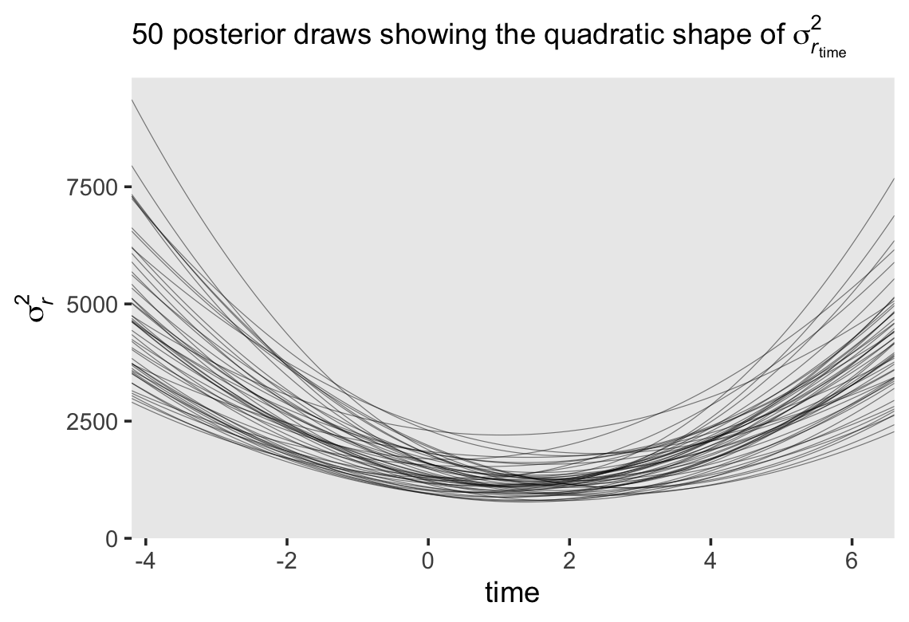
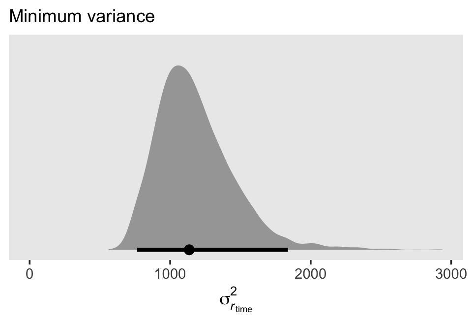
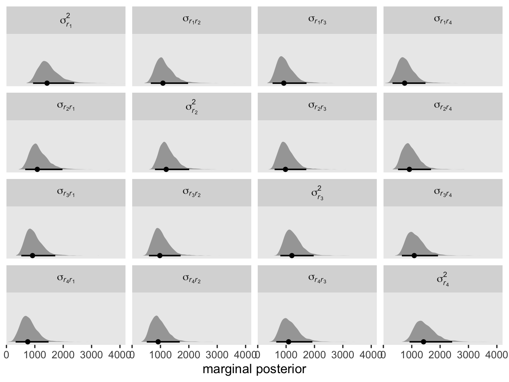
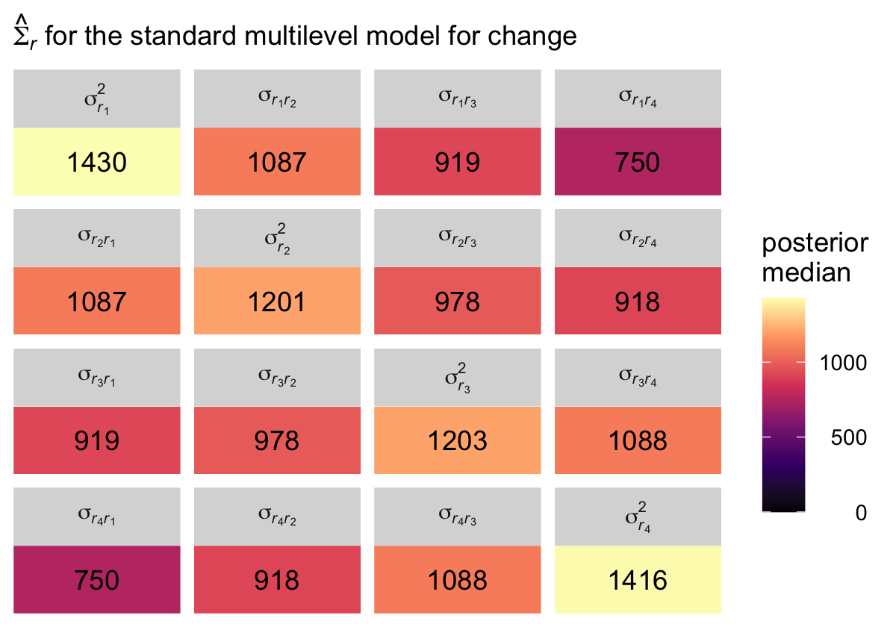
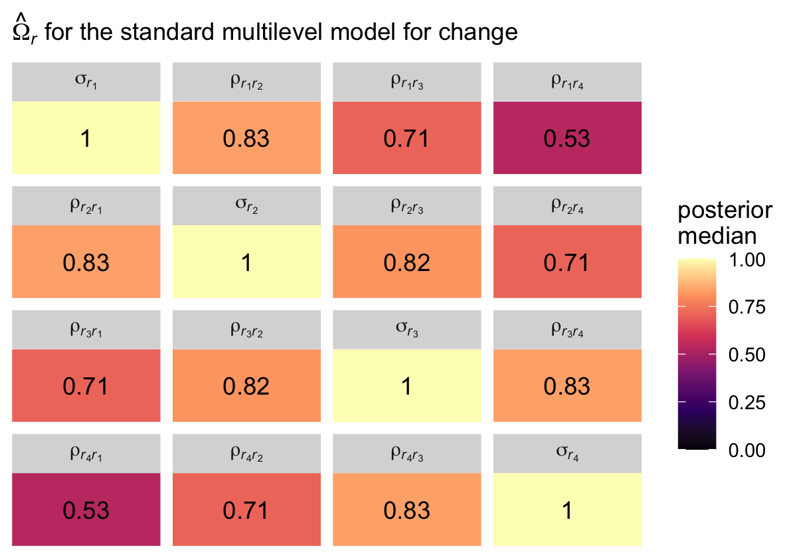
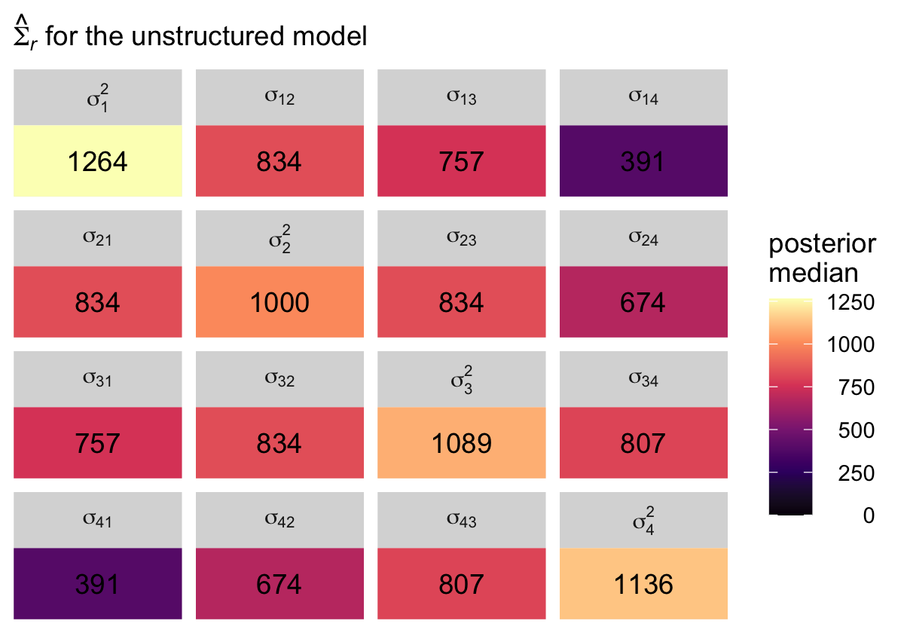
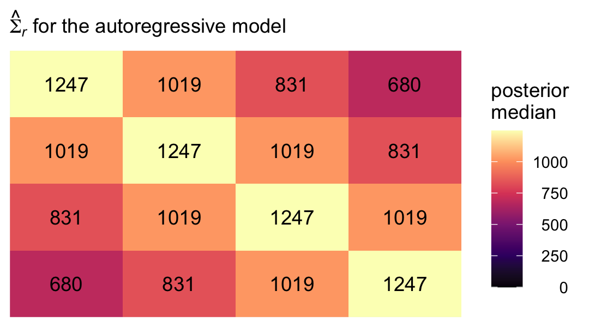
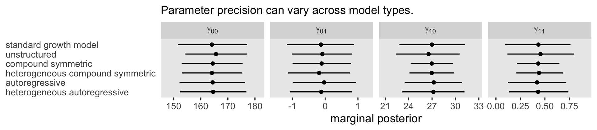

7 Examining the Multilevel Model’s Error Covariance Structure
In this chapter…, we focus on the model’s random effects as embodied in its error covariance structure. Doing so allows us to both describe the particular error covariance structure that the “standard” multilevel model for change invokes and it also allows us to broaden its representation to other—sometimes more tenable assumptions—about its behavior. (Singer & Willett, 2003, p. 243, emphasis in the original)
7.1 The “standard” specification of the multilevel model for change
Load the opposites_pp data (Willett, 1988).
library(tidyverse)
opposites_pp <- read_csv("~/Dropbox/Recoding Applied Longitudinal Data Analysis/data/opposites_pp.csv")
glimpse(opposites_pp)## Rows: 140
## Columns: 6
## $ id <dbl> 1, 1, 1, 1, 2, 2, 2, 2, 3, 3, 3, 3, 4, 4, 4, 4, 5, 5, 5, 5, 6, 6, 6, 6, 7, 7, 7, 7, 8, 8, 8, 8,…
## $ time <dbl> 0, 1, 2, 3, 0, 1, 2, 3, 0, 1, 2, 3, 0, 1, 2, 3, 0, 1, 2, 3, 0, 1, 2, 3, 0, 1, 2, 3, 0, 1, 2, 3,…
## $ opp <dbl> 205, 217, 268, 302, 219, 243, 279, 302, 142, 212, 250, 289, 206, 230, 248, 273, 190, 220, 229, …
## $ cog <dbl> 137, 137, 137, 137, 123, 123, 123, 123, 129, 129, 129, 129, 125, 125, 125, 125, 81, 81, 81, 81,…
## $ ccog <dbl> 23.5429, 23.5429, 23.5429, 23.5429, 9.5429, 9.5429, 9.5429, 9.5429, 15.5429, 15.5429, 15.5429, …
## $ wave <dbl> 1, 2, 3, 4, 1, 2, 3, 4, 1, 2, 3, 4, 1, 2, 3, 4, 1, 2, 3, 4, 1, 2, 3, 4, 1, 2, 3, 4, 1, 2, 3, 4,…Willett (1988) clarified these data were simulated for pedagogical purposes, which will become important later on. For now, here’s our version of Table 7.1.
opposites_pp %>%
mutate(name = str_c("opp", wave)) %>%
select(id, name, opp, cog) %>%
pivot_wider(names_from = name, values_from = opp) %>%
select(id, starts_with("opp"), cog) %>%
head(n = 10)## # A tibble: 10 × 6
## id opp1 opp2 opp3 opp4 cog
## <dbl> <dbl> <dbl> <dbl> <dbl> <dbl>
## 1 1 205 217 268 302 137
## 2 2 219 243 279 302 123
## 3 3 142 212 250 289 129
## 4 4 206 230 248 273 125
## 5 5 190 220 229 220 81
## 6 6 165 205 207 263 110
## 7 7 170 182 214 268 99
## 8 8 96 131 159 213 113
## 9 9 138 156 197 200 104
## 10 10 216 252 274 298 96The data are composed of 35 people’s scores on a cognitive task, across 4 time points.
opposites_pp %>%
count(id)## # A tibble: 35 × 2
## id n
## <dbl> <int>
## 1 1 4
## 2 2 4
## 3 3 4
## 4 4 4
## 5 5 4
## 6 6 4
## 7 7 4
## 8 8 4
## 9 9 4
## 10 10 4
## # ℹ 25 more rowsOur first model will serve as a comparison model for all that follow. We’ll often refer to it as the standard multilevel model for change. You’ll see why in a bit. It follows the form
\[ \begin{align*} \text{opp}_{ij} & = \pi_{0i} + \pi_{1i} \text{time}_{ij} + \epsilon_{ij}\\ \pi_{0i} & = \gamma_{00} + \gamma_{01} (\text{cog}_i - \overline{\text{cog}}) + \zeta_{0i}\\ \pi_{1i} & = \gamma_{10} + \gamma_{11} (\text{cog}_i - \overline{\text{cog}}) + \zeta_{1i} \\ \epsilon_{ij} & \stackrel{iid}{\sim} \operatorname{Normal}(0, \sigma_\epsilon) \\ \begin{bmatrix} \zeta_{0i} \\ \zeta_{1i} \end{bmatrix} & \stackrel{iid}{\sim} \operatorname{Normal} \left ( \begin{bmatrix} 0 \\ 0 \end{bmatrix}, \mathbf D \mathbf\Omega \mathbf D' \right ) \\ \mathbf D & = \begin{bmatrix} \sigma_0 & 0 \\ 0 & \sigma_1 \end{bmatrix} \\ \mathbf \Omega & = \begin{bmatrix} 1 & \rho_{01} \\ \rho_{01} & 1 \end{bmatrix}, \end{align*} \]
where the \((\text{cog}_i - \overline{\text{cog}})\) notation is meant to indicate we are mean centering the time-invariant covariate \(\text{cog}_i\). In the data, the mean-centered version is saved as ccog.
opposites_pp %>%
filter(wave == 1) %>%
ggplot(aes(ccog)) +
geom_histogram(binwidth = 5) +
theme(panel.grid = element_blank())
To keep things simple, we’ll be using brms default priors for all the models in this chapter. Fit the model.
library(brms)
fit7.1 <-
brm(data = opposites_pp,
family = gaussian,
opp ~ 0 + Intercept + time + ccog + time:ccog + (1 + time | id),
iter = 2000, warmup = 1000, chains = 4, cores = 4,
seed = 7,
file = "fits/fit07.01")Check the summary.
print(fit7.1, digits = 3)## Family: gaussian
## Links: mu = identity; sigma = identity
## Formula: opp ~ 0 + Intercept + time + ccog + time:ccog + (1 + time | id)
## Data: opposites_pp (Number of observations: 140)
## Draws: 4 chains, each with iter = 2000; warmup = 1000; thin = 1;
## total post-warmup draws = 4000
##
## Group-Level Effects:
## ~id (Number of levels: 35)
## Estimate Est.Error l-95% CI u-95% CI Rhat Bulk_ESS Tail_ESS
## sd(Intercept) 36.042 5.020 27.666 47.287 1.003 1325 1922
## sd(time) 10.687 1.806 7.547 14.642 1.001 1327 2307
## cor(Intercept,time) -0.443 0.159 -0.711 -0.098 1.002 1798 2536
##
## Population-Level Effects:
## Estimate Est.Error l-95% CI u-95% CI Rhat Bulk_ESS Tail_ESS
## Intercept 164.108 6.453 151.639 177.065 1.004 1153 1783
## time 26.988 2.093 22.810 31.235 1.004 1629 2086
## ccog -0.129 0.521 -1.162 0.881 1.002 1337 2211
## time:ccog 0.434 0.167 0.095 0.761 1.002 1997 2570
##
## Family Specific Parameters:
## Estimate Est.Error l-95% CI u-95% CI Rhat Bulk_ESS Tail_ESS
## sigma 12.898 1.112 10.968 15.285 1.000 1702 2746
##
## Draws were sampled using sampling(NUTS). For each parameter, Bulk_ESS
## and Tail_ESS are effective sample size measures, and Rhat is the potential
## scale reduction factor on split chains (at convergence, Rhat = 1).If you’re curious, here’s the summary of our \(\sigma\) parameters transformed to the variance/covariance metric.
library(tidybayes)
levels <- c("sigma[epsilon]^2", "sigma[0]^2", "sigma[1]^2", "sigma[0][1]")
sigma <-
as_draws_df(fit7.1) %>%
transmute(`sigma[0]^2` = sd_id__Intercept^2,
`sigma[1]^2` = sd_id__time^2,
`sigma[epsilon]^2` = sigma^2,
`sigma[0][1]` = sd_id__Intercept * sd_id__time * cor_id__Intercept__time)
sigma %>%
pivot_longer(everything()) %>%
mutate(name = factor(name, levels = levels)) %>%
group_by(name) %>%
median_qi(value) %>%
mutate_if(is.double, round, digits = 2)## # A tibble: 4 × 7
## name value .lower .upper .width .point .interval
## <fct> <dbl> <dbl> <dbl> <dbl> <chr> <chr>
## 1 sigma[epsilon]^2 164. 120. 234. 0.95 median qi
## 2 sigma[0]^2 1261. 765. 2236. 0.95 median qi
## 3 sigma[1]^2 112. 57.0 214. 0.95 median qi
## 4 sigma[0][1] -166. -399. -28.1 0.95 median qi7.2 Using the composite model to understand assumptions about the error covariance matrix
Dropping the terms specifying the distributional assumptions, we can reexpress the model formula, from above, in the composite format as
\[ \begin{align*} \text{opp}_{ij} & = [\gamma_{00} + \gamma_{10} \text{time}_{ij} + \gamma_{01} (\text{cog}_i - \overline{\text{cog}}) + \gamma_{11} (\text{cog}_i - \overline{\text{cog}}) \times \text{time}_{ij}] \\ & \;\;\; + [\zeta_{0i} + \zeta_{1i} \text{time}_{ij} + \epsilon_{ij}], \end{align*} \]
where we’ve divided up the structural and stochastic components with our use of brackets. We might think of the terms of the stochastic portion as a composite residual, \(r_{ij} = [\epsilon_{ij} + \zeta_{0i} + \zeta_{1i} \text{time}_{ij}]\). Thus, we can rewrite the composite equation with the composite residual term \(r_{ij}\) as
\[ \text{opp}_{ij} = [\gamma_{00} + \gamma_{10} \text{time}_{ij} + \gamma_{01} (\text{cog}_i - \overline{\text{cog}}) + \gamma_{11} (\text{cog}_i - \overline{\text{cog}}) \times \text{time}_{ij}] + r_{ij}. \]
If we were willing to presume, as in OLS or single-level Bayesian regression, that all residuals are independent and normally distributed, we could express that in statistical notation as
\[\begin{align*} \begin{bmatrix} r_{11} \\ r_{12} \\ r_{13} \\ r_{14} \\ r_{21} \\ r_{22} \\ r_{23} \\ r_{24} \\ \vdots \\ r_{n1} \\ r_{n2} \\ r_{n3} \\ r_{n4} \end{bmatrix} & \sim \mathcal{N} \begin{pmatrix} \begin{bmatrix} 0 \\ 0 \\ 0 \\ 0 \\ 0 \\ 0 \\ 0 \\ 0 \\ \vdots \\ 0 \\ 0 \\ 0 \\ 0 \\ \end{bmatrix}, \begin{bmatrix} \sigma_r^2 & 0 & 0 & 0 & 0 & 0 & 0 & 0 & \dots & 0 & 0 & 0 & 0 \\ 0 & \sigma_r^2 & 0 & 0 & 0 & 0 & 0 & 0 & \dots & 0 & 0 & 0 & 0 \\ 0 & 0 & \sigma_r^2 & 0 & 0 & 0 & 0 & 0 & \dots & 0 & 0 & 0 & 0 \\ 0 & 0 & 0 & \sigma_r^2 & 0 & 0 & 0 & 0 & \dots & 0 & 0 & 0 & 0 \\ 0 & 0 & 0 & 0 & \sigma_r^2 & 0 & 0 & 0 & \dots & 0 & 0 & 0 & 0 \\ 0 & 0 & 0 & 0 & 0 & \sigma_r^2 & 0 & 0 & \dots & 0 & 0 & 0 & 0 \\ 0 & 0 & 0 & 0 & 0 & 0 & \sigma_r^2 & 0 & \dots & 0 & 0 & 0 & 0 \\ 0 & 0 & 0 & 0 & 0 & 0 & 0 & \sigma_r^2 & \dots & 0 & 0 & 0 & 0 \\ \vdots & \vdots & \vdots & \vdots & \vdots & \vdots & \vdots & \vdots & \ddots & \vdots & \vdots & \vdots & \vdots & \\ 0 & 0 & 0 & 0 & 0 & 0 & 0 & 0 & \dots & \sigma_r^2 & 0 & 0 & 0 \\ 0 & 0 & 0 & 0 & 0 & 0 & 0 & 0 & \dots & 0 & \sigma_r^2 & 0 & 0 \\ 0 & 0 & 0 & 0 & 0 & 0 & 0 & 0 & \dots & 0 & 0 & \sigma_r^2 & 0 \\ 0 & 0 & 0 & 0 & 0 & 0 & 0 & 0 & \dots & 0 & 0 & 0 & \sigma_r^2 \end{bmatrix} \end{pmatrix}, \end{align*}\]
where \(r_{ij}\) is the \(i\)th person’s residual on the \(j\)th time point. The variance/covariance matrix \(\mathbf \Sigma\) is diagonal (i.e., all the off-diagonal elements are 0’s) and homoscedastic (i.e., all the diagonal elements are the same value, \(\sigma_r^2\)).
These assumptions are absurd for longitudinal data, which is why we don’t analyze such data with single-level models. If we were to make the less restrictive assumptions that, within people, the residuals were correlated over time and were heteroscedastic, we could express that as
\[\begin{align*} \begin{bmatrix} r_{11} \\ r_{12} \\ r_{13} \\ r_{14} \\ r_{21} \\ r_{22} \\ r_{23} \\ r_{24} \\ \vdots \\ r_{n1} \\ r_{n2} \\ r_{n3} \\ r_{n4} \end{bmatrix} & \sim \mathcal{N} \begin{pmatrix} \begin{bmatrix} 0 \\ 0 \\ 0 \\ 0 \\ 0 \\ 0 \\ 0 \\ 0 \\ \vdots \\ 0 \\ 0 \\ 0 \\ 0 \\ \end{bmatrix}, \begin{bmatrix} \sigma_{r_1}^2 & \sigma_{r_1 r_2} & \sigma_{r_1 r_3} & \sigma_{r_1 r_4} & 0 & 0 & 0 & 0 & \dots & 0 & 0 & 0 & 0 \\ \sigma_{r_2 r_1} & \sigma_{r_2}^2 & \sigma_{r_2 r_3} & \sigma_{r_2 r_4} & 0 & 0 & 0 & 0 & \dots & 0 & 0 & 0 & 0 \\ \sigma_{r_3 r_1} & \sigma_{r_3 r_2} & \sigma_{r_3}^2 & \sigma_{r_3 r_4} & 0 & 0 & 0 & 0 & \dots & 0 & 0 & 0 & 0 \\ \sigma_{r_4 r_1} & \sigma_{r_4 r_2} & \sigma_{r_4 r_3} & \sigma_{r_4}^2 & 0 & 0 & 0 & 0 & \dots & 0 & 0 & 0 & 0 \\ 0 & 0 & 0 & 0 & \sigma_{r_1}^2 & \sigma_{r_1 r_2} & \sigma_{r_1 r_3} & \sigma_{r_1 r_4} & \dots & 0 & 0 & 0 & 0 \\ 0 & 0 & 0 & 0 & \sigma_{r_2 r_1} & \sigma_{r_2}^2 & \sigma_{r_2 r_3} & \sigma_{r_2 r_4} & \dots & 0 & 0 & 0 & 0 \\ 0 & 0 & 0 & 0 & \sigma_{r_3 r_1} & \sigma_{r_3 r_2} & \sigma_{r_3}^2 & \sigma_{r_3 r_4} & \dots & 0 & 0 & 0 & 0 \\ 0 & 0 & 0 & 0 & \sigma_{r_4 r_1} & \sigma_{r_4 r_2} & \sigma_{r_4 r_3} & \sigma_{r_4}^2 & \dots & 0 & 0 & 0 & 0 \\ \vdots & \vdots & \vdots & \vdots & \vdots & \vdots & \vdots & \vdots & \ddots & \vdots & \vdots & \vdots & \vdots & \\ 0 & 0 & 0 & 0 & 0 & 0 & 0 & 0 & \dots & \sigma_{r_1}^2 & \sigma_{r_1 r_2} & \sigma_{r_1 r_3} & \sigma_{r_1 r_4} \\ 0 & 0 & 0 & 0 & 0 & 0 & 0 & 0 & \dots & \sigma_{r_2 r_1} & \sigma_{r_2}^2 & \sigma_{r_2 r_3} & \sigma_{r_2 r_4} \\ 0 & 0 & 0 & 0 & 0 & 0 & 0 & 0 & \dots & \sigma_{r_3 r_1} & \sigma_{r_3 r_2} & \sigma_{r_3}^2 & \sigma_{r_3 r_4} \\ 0 & 0 & 0 & 0 & 0 & 0 & 0 & 0 & \dots & \sigma_{r_4 r_1} & \sigma_{r_4 r_2} & \sigma_{r_4 r_3} & \sigma_{r_4}^2 \end{bmatrix} \end{pmatrix}. \end{align*}\]
this kind of structure can be called block diagonal, which means the off-diagonal elements are zero between persons, but allowed to be non-zero within persons (i.e., within blocks). The zero elements between person blocks explicate how the residuals are independent between persons. Notice that the variances on the diagonal vary across the four time points (i.e., \(\sigma_{r_1}^2, \dots, \sigma_{r_4}^2\)). Yet also notice that the block for one person is identical to the block for all others. Thus, this model allows for heterogeneity across time within persons, but homogeneity between persons.
We can express this in the more compact notation,
\[\begin{align*} r & \sim \mathcal{N} \begin{pmatrix} \mathbf 0, \begin{bmatrix} \mathbf{\Sigma}_r & \mathbf 0 & \mathbf 0 & \dots & \mathbf 0 \\ \mathbf 0 & \mathbf{\Sigma}_r & \mathbf 0 & \dots & \mathbf 0 \\ \mathbf 0 & \mathbf 0 & \mathbf{\Sigma}_r & \dots & \mathbf 0 \\ \vdots & \vdots & \vdots & \ddots & \mathbf 0 \\ \mathbf 0 & \mathbf 0 & \mathbf 0 & \mathbf 0 & \mathbf{\Sigma}_r \end{bmatrix} \end{pmatrix}, \;\;\; \text{where} \\ \mathbf{\Sigma}_r & = \begin{bmatrix} \sigma_{r_1}^2 & \sigma_{r_1 r_2} & \sigma_{r_1 r_3} & \sigma_{r_1 r_4} \\ \sigma_{r_2 r_1} & \sigma_{r_2}^2 & \sigma_{r_2 r_3} & \sigma_{r_2 r_4} \\ \sigma_{r_3 r_1} & \sigma_{r_3 r_2} & \sigma_{r_3}^2 & \sigma_{r_3 r_4} \\ \sigma_{r_4 r_1} & \sigma_{r_4 r_2} & \sigma_{r_4 r_3} & \sigma_{r_4}^2 \end{bmatrix}. \end{align*}\]
The bulk of the rest of the material in this chapter will focus around how different models handle \(\mathbf{\Sigma}_r\). The standard multilevel growth model has one way. There are many others.
7.2.1 Variance of the composite residual.
Under the conventional multilevel growth model
\[ \begin{align*} \sigma_{r_j}^2 & = \operatorname{Var} \left ( \epsilon_{ij} + \zeta_{0i} + \zeta_{1i} \text{time}_j \right ) \\ & = \sigma_\epsilon^2 + \sigma_0^2 + 2 \sigma_{01} \text{time}_j + \sigma_1^2 \text{time}_j^2. \end{align*} \]
Here’s how to use our posterior samples to compute \(\sigma_{r_1}^2, \dots, \sigma_{r_4}^2\).
sigma %>%
mutate(iter = 1:n()) %>%
expand(nesting(iter, `sigma[epsilon]^2`, `sigma[0]^2`, `sigma[1]^2`, `sigma[0][1]`),
time = 0:3) %>%
mutate(r = `sigma[epsilon]^2` + `sigma[0]^2` + 2 * `sigma[0][1]` * time + `sigma[1]^2` * time^2) %>%
mutate(name = str_c("sigma[italic(r)[", time + 1, "]]^2")) %>%
ggplot(aes(x = r, y = name)) +
stat_halfeye(.width = .95, size = 1) +
scale_x_continuous("marginal posterior", expand = expansion(mult = c(0, 0.05)), limits = c(0, NA)) +
scale_y_discrete(NULL, labels = ggplot2:::parse_safe) +
coord_cartesian(ylim = c(1.5, 4.2)) +
theme(panel.grid = element_blank())
As is often the case with variance parameters, the posteriors show marked right skew. Here are the numeric summaries.
sigma %>%
mutate(iter = 1:n()) %>%
expand(nesting(iter, `sigma[epsilon]^2`, `sigma[0]^2`, `sigma[1]^2`, `sigma[0][1]`),
time = 0:3) %>%
mutate(r = `sigma[epsilon]^2` + `sigma[0]^2` + 2 * `sigma[0][1]` * time + `sigma[1]^2` * time^2) %>%
mutate(name = str_c("sigma[italic(r)[", time + 1, "]]^2")) %>%
group_by(name) %>%
median_qi(r)## # A tibble: 4 × 7
## name r .lower .upper .width .point .interval
## <chr> <dbl> <dbl> <dbl> <dbl> <chr> <chr>
## 1 sigma[italic(r)[1]]^2 1430. 938. 2388. 0.95 median qi
## 2 sigma[italic(r)[2]]^2 1201. 807. 2011. 0.95 median qi
## 3 sigma[italic(r)[3]]^2 1203. 798. 1972. 0.95 median qi
## 4 sigma[italic(r)[4]]^2 1416. 923. 2424. 0.95 median qiThough our precise numeric values are different from those in the text, we see the same overall pattern. Using our posterior medians, we can update \(\mathbf{\Sigma}_r\) to
\[ \begin{align*} \hat{\mathbf{\Sigma}}_r & = \begin{bmatrix} 1430 & \hat{\sigma}_{r_1 r_2} & \hat{\sigma}_{r_1 r_3} & \hat{\sigma}_{r_1 r_4} \\ \hat{\sigma}_{r_2 r_1} & 1201 & \hat{\sigma}_{r_2 r_3} & \hat{\sigma}_{r_2 r_4} \\ \hat{\sigma}_{r_3 r_1} & \hat{\sigma}_{r_3 r_2} & 1203 & \hat{\sigma}_{r_3 r_4} \\ \hat{\sigma}_{r_4 r_1} & \hat{\sigma}_{r_4 r_2} & \hat{\sigma}_{r_4 r_3} & 1416 \end{bmatrix}. \end{align*} \]
For the opposites-naming data, composite residual variance is greatest at the beginning and end of data collection and smaller in between. And, while not outrageously heteroscedastic, this situation is clearly beyond the bland homoscedasticity that we routinely assume for residuals in cross-sectional data. (p. 252)
If you work through the equation at the beginning of this section–which I am not going to do, here–, you’ll see that the standard multilevel growth model is set up such that the residual variance follows a quadratic function with time. To give a sense, here we plot the expected \(\sigma_r^2\) values over a wider and more continuous range of time values.
set.seed(7)
sigma %>%
mutate(iter = 1:n()) %>%
slice_sample(n = 50) %>%
expand(nesting(iter, `sigma[epsilon]^2`, `sigma[0]^2`, `sigma[1]^2`, `sigma[0][1]`),
time = seq(from = -4.2, to = 6.6, length.out = 200)) %>%
mutate(r = `sigma[epsilon]^2` + `sigma[0]^2` + 2 * `sigma[0][1]` * time + `sigma[1]^2` * time^2) %>%
ggplot(aes(x = time, y = r, group = iter)) +
geom_line(linewidth = 1/6, alpha = 1/2) +
scale_x_continuous(expand = c(0, 0)) +
scale_y_continuous(expression(sigma[italic(r)]^2),
expand = expansion(mult = c(0, 0.05)), limits = c(0, NA)) +
labs(subtitle = expression("50 posterior draws showing the quadratic shape of "*sigma[italic(r)[time]]^2)) +
theme(panel.grid = element_blank())
Since we have 4,000 posterior draws for all the parameters, we also have 4,000 posterior draws for the quadratic curve. Here we just show 50. The curve is at its minimum at \(\text{time} = -(\sigma_{01} / \sigma_1^2)\). Since we have posterior distributions for \(\sigma_{01}\) and \(\sigma_1^2\), we’ll also have a posterior distribution for the minimum point. Here it is.
sigma %>%
mutate(minimum = -`sigma[0][1]` / `sigma[1]^2`) %>%
ggplot(aes(x = minimum, y = 0)) +
stat_halfeye(.width = .95) +
scale_x_continuous("time", expand = c(0, 0), limits = c(-4.2, 6.6)) +
scale_y_continuous(NULL, breaks = NULL) +
labs(subtitle = expression(Minimum~value~(-sigma[0][1]/sigma[1]^2))) +
theme(panel.grid = element_blank())
If we plug those minimum time values into the equation for \(\sigma_{r_\text{time}}^2\), we’ll get the posterior distribution for the minimum variance value.
sigma %>%
mutate(minimum = -`sigma[0][1]` / `sigma[1]^2`) %>%
mutate(r = `sigma[epsilon]^2` + `sigma[0]^2` + 2 * `sigma[0][1]` * minimum + `sigma[1]^2` * minimum^2) %>%
ggplot(aes(x = r, y = 0)) +
stat_halfeye(.width = .95) +
scale_x_continuous(expression(sigma[italic(r)[time]]^2), limits = c(0, NA)) +
scale_y_continuous(NULL, breaks = NULL) +
labs(subtitle = "Minimum variance") +
theme(panel.grid = element_blank())
Here’s the numeric summary.
sigma %>%
mutate(minimum = -`sigma[0][1]` / `sigma[1]^2`) %>%
mutate(r = `sigma[epsilon]^2` + `sigma[0]^2` + 2 * `sigma[0][1]` * minimum + `sigma[1]^2` * minimum^2) %>%
median_qi(r)## # A tibble: 1 × 6
## r .lower .upper .width .point .interval
## <dbl> <dbl> <dbl> <dbl> <chr> <chr>
## 1 1136. 765. 1838. 0.95 median qi7.2.2 Covariance of the composite residuals.
In addition to the variances in \(\mathbf{\Sigma}_r\), we might focus on the off-diagonal covariances, too. We can define the covariance between two time points \(\sigma_{r_j, r_{j'}}\) as
\[ \sigma_{r_j, r_{j'}} = \sigma_0^2 + \sigma_{01} (t_j + t_{j'}) + \sigma_1^2 t_j t_{j'}, \]
where \(\sigma_0^2\), \(\sigma_{01}\) and \(\sigma_1^2\) all have their usual interpretation, and \(t_j\) and \(t_{j'}\) are the numeric values for whatever variable is used to index time in the model, which is time in the case of fit7.1. Here we compute and plot the marginal posteriors for all \(4 \times 4 = 16\) parameters.
# arrange the panels
levels <-
c("sigma[italic(r)[1]]^2", "sigma[italic(r)[1]][italic(r)[2]]", "sigma[italic(r)[1]][italic(r)[3]]", "sigma[italic(r)[1]][italic(r)[4]]",
"sigma[italic(r)[2]][italic(r)[1]]", "sigma[italic(r)[2]]^2", "sigma[italic(r)[2]][italic(r)[3]]", "sigma[italic(r)[2]][italic(r)[4]]",
"sigma[italic(r)[3]][italic(r)[1]]", "sigma[italic(r)[3]][italic(r)[2]]", "sigma[italic(r)[3]]^2", "sigma[italic(r)[3]][italic(r)[4]]",
"sigma[italic(r)[4]][italic(r)[1]]", "sigma[italic(r)[4]][italic(r)[2]]", "sigma[italic(r)[4]][italic(r)[3]]", "sigma[italic(r)[4]]^2")
# wrangle
sigma <-
sigma %>%
mutate(`sigma[italic(r)[1]]^2` = `sigma[epsilon]^2` + `sigma[0]^2` + 2 * `sigma[0][1]` * 0 + `sigma[1]^2` * 0^2,
`sigma[italic(r)[2]]^2` = `sigma[epsilon]^2` + `sigma[0]^2` + 2 * `sigma[0][1]` * 1 + `sigma[1]^2` * 1^2,
`sigma[italic(r)[3]]^2` = `sigma[epsilon]^2` + `sigma[0]^2` + 2 * `sigma[0][1]` * 2 + `sigma[1]^2` * 2^2,
`sigma[italic(r)[4]]^2` = `sigma[epsilon]^2` + `sigma[0]^2` + 2 * `sigma[0][1]` * 3 + `sigma[1]^2` * 3^2,
`sigma[italic(r)[2]][italic(r)[1]]` = `sigma[0]^2` + `sigma[0][1]` * (1 + 0) + `sigma[1]^2` * 1 * 0,
`sigma[italic(r)[3]][italic(r)[1]]` = `sigma[0]^2` + `sigma[0][1]` * (2 + 0) + `sigma[1]^2` * 2 * 0,
`sigma[italic(r)[4]][italic(r)[1]]` = `sigma[0]^2` + `sigma[0][1]` * (3 + 0) + `sigma[1]^2` * 3 * 0,
`sigma[italic(r)[3]][italic(r)[2]]` = `sigma[0]^2` + `sigma[0][1]` * (2 + 1) + `sigma[1]^2` * 2 * 1,
`sigma[italic(r)[4]][italic(r)[2]]` = `sigma[0]^2` + `sigma[0][1]` * (3 + 1) + `sigma[1]^2` * 3 * 1,
`sigma[italic(r)[4]][italic(r)[3]]` = `sigma[0]^2` + `sigma[0][1]` * (3 + 2) + `sigma[1]^2` * 3 * 2,
`sigma[italic(r)[1]][italic(r)[2]]` = `sigma[0]^2` + `sigma[0][1]` * (0 + 1) + `sigma[1]^2` * 0 * 1,
`sigma[italic(r)[1]][italic(r)[3]]` = `sigma[0]^2` + `sigma[0][1]` * (0 + 2) + `sigma[1]^2` * 0 * 2,
`sigma[italic(r)[2]][italic(r)[3]]` = `sigma[0]^2` + `sigma[0][1]` * (1 + 2) + `sigma[1]^2` * 1 * 2,
`sigma[italic(r)[1]][italic(r)[4]]` = `sigma[0]^2` + `sigma[0][1]` * (0 + 3) + `sigma[1]^2` * 0 * 3,
`sigma[italic(r)[2]][italic(r)[4]]` = `sigma[0]^2` + `sigma[0][1]` * (1 + 3) + `sigma[1]^2` * 1 * 3,
`sigma[italic(r)[3]][italic(r)[4]]` = `sigma[0]^2` + `sigma[0][1]` * (2 + 3) + `sigma[1]^2` * 2 * 3)
sigma %>%
select(contains("italic")) %>%
pivot_longer(everything()) %>%
mutate(name = factor(name, levels = levels)) %>%
# plot!
ggplot(aes(x = value, y = 0)) +
stat_halfeye(.width = .95, size = 1) +
scale_x_continuous("marginal posterior", expand = expansion(mult = c(0, 0.05))) +
scale_y_discrete(NULL, breaks = NULL) +
coord_cartesian(xlim = c(0, 4000),
ylim = c(0.5, NA)) +
theme(panel.grid = element_blank()) +
facet_wrap(~ name, labeller = label_parsed)
It might be helpful to reduce the complexity of this plot by focusing on the posterior medians. With a little help from geom_tile() and geom_text(), we’ll make a plot version of the matrix at the top of page 255 in the text.
sigma %>%
select(contains("italic")) %>%
pivot_longer(everything()) %>%
mutate(name = factor(name, levels = levels)) %>%
group_by(name) %>%
median_qi(value) %>%
mutate(label = round(value, digits = 0)) %>%
ggplot(aes(x = 0, y = 0)) +
geom_tile(aes(fill = value)) +
geom_text(aes(label = label)) +
scale_fill_viridis_c("posterior\nmedian", option = "A", limits = c(0, NA)) +
scale_x_continuous(NULL, breaks = NULL, expand = c(0, 0)) +
scale_y_continuous(NULL, breaks = NULL, expand = c(0, 0)) +
labs(subtitle = expression(hat(Sigma)[italic(r)]*" for the standard multilevel model for change")) +
theme(legend.text = element_text(hjust = 1)) +
facet_wrap(~ name, labeller = label_parsed)
Although our posterior median values differ a bit from the REML values reported in the text, the overall pattern holds. Hopefully the coloring in the plot helps highlight what Singer and Willett described as a “‘band diagonal’ structure, in which the overall magnitude of the residual covariances tends to decline in diagonal ‘bands’ the further you get from the main diagonal” (p. 255).
One of the consequences for this structure is that in cases where both \(\sigma_1^2 \rightarrow 0\) and \(\sigma_{01} \rightarrow 0\), the residual covariance matrix becomes compound symmetric, which is:
\[ \begin{align*} \mathbf{\Sigma}_r & = \begin{bmatrix} \sigma_\epsilon^2 + \sigma_0^2 & \sigma_0^2 & \sigma_0^2 & \sigma_0^2 \\ \sigma_0^2 & \sigma_\epsilon^2 + \sigma_0^2 & \sigma_0^2 & \sigma_0^2 \\ \sigma_0^2 & \sigma_0^2 & \sigma_\epsilon^2 + \sigma_0^2 & \sigma_0^2 \\ \sigma_0^2 & \sigma_0^2 & \sigma_0^2 & \sigma_\epsilon^2 + \sigma_0^2 \end{bmatrix}. \end{align*} \]
Compound symmetric error covariance structures are particularly common in longitudinal data, especially if the slopes of the change trajectories do not differ much asroc people. Regardless of these special cases, however, the most sensible question to ask of your data is whether the error covariance structure that the “standard” multilevel model for change demands is realistic when applied to data in practice? The answer to this question will determine whether the standard model can be applied ubiquitously, as question we soon address. (pp. 255–256)
7.2.3 Autocorrelation of the composite residuals.
We can use the following equation to convert our \(\mathbf{\Sigma}_r\) into a correlation matrix:
\[\rho_{r_j r_{j^\prime}} = \sigma_{r_j r_{j^\prime}} \Big / \sqrt{\sigma_{r_j}^2 \sigma_{r_{j^\prime}}^2}.\]
Here we use the formula and plot the posteriors.
# arrange the panels
levels <-
c("sigma[italic(r)[1]]", "rho[italic(r)[1]][italic(r)[2]]", "rho[italic(r)[1]][italic(r)[3]]", "rho[italic(r)[1]][italic(r)[4]]",
"rho[italic(r)[2]][italic(r)[1]]", "sigma[italic(r)[2]]", "rho[italic(r)[2]][italic(r)[3]]", "rho[italic(r)[2]][italic(r)[4]]",
"rho[italic(r)[3]][italic(r)[1]]", "rho[italic(r)[3]][italic(r)[2]]", "sigma[italic(r)[3]]", "rho[italic(r)[3]][italic(r)[4]]",
"rho[italic(r)[4]][italic(r)[1]]", "rho[italic(r)[4]][italic(r)[2]]", "rho[italic(r)[4]][italic(r)[3]]", "sigma[italic(r)[4]]")
sigma <-
sigma %>%
select(contains("italic")) %>%
mutate(`sigma[italic(r)[1]]` = `sigma[italic(r)[1]]^2` / sqrt(`sigma[italic(r)[1]]^2`^2),
`rho[italic(r)[2]][italic(r)[1]]` = `sigma[italic(r)[2]][italic(r)[1]]` / sqrt(`sigma[italic(r)[2]]^2` * `sigma[italic(r)[1]]^2`),
`rho[italic(r)[3]][italic(r)[1]]` = `sigma[italic(r)[3]][italic(r)[1]]` / sqrt(`sigma[italic(r)[3]]^2` * `sigma[italic(r)[1]]^2`),
`rho[italic(r)[4]][italic(r)[1]]` = `sigma[italic(r)[4]][italic(r)[1]]` / sqrt(`sigma[italic(r)[4]]^2` * `sigma[italic(r)[1]]^2`),
`rho[italic(r)[1]][italic(r)[2]]` = `sigma[italic(r)[1]][italic(r)[2]]` / sqrt(`sigma[italic(r)[1]]^2` * `sigma[italic(r)[2]]^2`),
`sigma[italic(r)[2]]` = `sigma[italic(r)[2]]^2` / sqrt(`sigma[italic(r)[2]]^2`^2),
`rho[italic(r)[3]][italic(r)[2]]` = `sigma[italic(r)[3]][italic(r)[2]]` / sqrt(`sigma[italic(r)[3]]^2` * `sigma[italic(r)[2]]^2`),
`rho[italic(r)[4]][italic(r)[2]]` = `sigma[italic(r)[4]][italic(r)[2]]` / sqrt(`sigma[italic(r)[4]]^2` * `sigma[italic(r)[2]]^2`),
`rho[italic(r)[1]][italic(r)[3]]` = `sigma[italic(r)[1]][italic(r)[3]]` / sqrt(`sigma[italic(r)[1]]^2` * `sigma[italic(r)[3]]^2`),
`rho[italic(r)[2]][italic(r)[3]]` = `sigma[italic(r)[2]][italic(r)[3]]` / sqrt(`sigma[italic(r)[2]]^2` * `sigma[italic(r)[3]]^2`),
`sigma[italic(r)[3]]` = `sigma[italic(r)[3]]^2` / sqrt(`sigma[italic(r)[3]]^2`^2),
`rho[italic(r)[4]][italic(r)[3]]` = `sigma[italic(r)[4]][italic(r)[3]]` / sqrt(`sigma[italic(r)[4]]^2` * `sigma[italic(r)[3]]^2`),
`rho[italic(r)[1]][italic(r)[4]]` = `sigma[italic(r)[1]][italic(r)[4]]` / sqrt(`sigma[italic(r)[1]]^2` * `sigma[italic(r)[4]]^2`),
`rho[italic(r)[2]][italic(r)[4]]` = `sigma[italic(r)[2]][italic(r)[4]]` / sqrt(`sigma[italic(r)[2]]^2` * `sigma[italic(r)[4]]^2`),
`rho[italic(r)[3]][italic(r)[4]]` = `sigma[italic(r)[3]][italic(r)[4]]` / sqrt(`sigma[italic(r)[3]]^2` * `sigma[italic(r)[4]]^2`),
`sigma[italic(r)[4]]` = `sigma[italic(r)[4]]^2` / sqrt(`sigma[italic(r)[4]]^2`^2))
sigma %>%
select(`sigma[italic(r)[1]]`:`sigma[italic(r)[4]]`) %>%
pivot_longer(everything()) %>%
mutate(name = factor(name, levels = levels)) %>%
# plot!
ggplot(aes(x = value, y = 0)) +
stat_halfeye(.width = .95, size = 1) +
scale_x_continuous("marginal posterior", expand = c(0, 0), limits = c(0, 1),
breaks = 0:4 / 4, labels = c("0", ".25", ".5", ".75", "1")) +
scale_y_discrete(NULL, breaks = NULL) +
coord_cartesian(ylim = c(0.5, NA)) +
theme(panel.grid = element_blank()) +
facet_wrap(~ name, labeller = label_parsed)
As before, it might be helpful to reduce the complexity of this plot by focusing on the posterior medians. We’ll make a plot version of the correlation matrix in the middle of page 256 in the text.
sigma %>%
select(`sigma[italic(r)[1]]`:`sigma[italic(r)[4]]`) %>%
pivot_longer(everything()) %>%
mutate(name = factor(name, levels = levels)) %>%
group_by(name) %>%
median_qi(value) %>%
mutate(label = round(value, digits = 2)) %>%
ggplot(aes(x = 0, y = 0)) +
geom_tile(aes(fill = value)) +
geom_text(aes(label = label)) +
scale_fill_viridis_c("posterior\nmedian", option = "A", limits = c(0, 1)) +
scale_x_continuous(NULL, breaks = NULL, expand = c(0, 0)) +
scale_y_continuous(NULL, breaks = NULL, expand = c(0, 0)) +
labs(subtitle = expression(hat(Omega)[italic(r)]*" for the standard multilevel model for change")) +
theme(legend.text = element_text(hjust = 1)) +
facet_wrap(~ name, labeller = label_parsed)
The correlation matrix has an even more pronounced band-diagonal structure. Thus even though the standard multilevel model of change does not contain an explicit autocorrelation parameter \(\rho\), the model does account for residual autocorrelation. We might take this even further. Notice the parameters \(\rho_{r_2, r_1}\), \(\rho_{r_3, r_2}\), and \(\rho_{r_4, r_3}\) are all autocorrelations of the first order, and further note how similar their posterior medians all are. Here’s a summary of the average of those three parameters, which we’ll just call \(\rho\).
sigma %>%
# take the average of the three parameters
transmute(rho = (`rho[italic(r)[2]][italic(r)[1]]` + `rho[italic(r)[3]][italic(r)[2]]` + `rho[italic(r)[4]][italic(r)[3]]`) / 3) %>%
# summarize
median_qi()## # A tibble: 1 × 6
## rho .lower .upper .width .point .interval
## <dbl> <dbl> <dbl> <dbl> <chr> <chr>
## 1 0.827 0.736 0.897 0.95 median qiIf you look at the “estimate” column in Table 7.3 (pp. 258–259), you’ll see the \(\hat \rho\) values for the autoregressive and heterogeneous-autoregressive models are very similar to the \(\hat \rho\) posterior we just computed for the standard multilevel model of change. The standard multilevel model of change accounts for autocorrelation, but it does so without an explicit \(\rho\) parameter.
7.3 Postulating an alternative error covariance structure
Singer and Willett wrote:
it is easy to specify alternative covariance structures for the composite residual and determine analytically which specification—the “standard” or an alternative—fits best. You already possess the analytic tools and skills needed for this work. (p. 257)
Frequentest R users would likely do this with the nlme package (Pinheiro et al., 2021). Recent additions to brms makes this largely possible, but not completely so. The six error structures listed in this section were:
- unstructured,
- compound symmetric,
- heterogeneous compound symmetric,
- autoregressive,
- heterogeneous autoregressive, and
- Toeplitz.
The Toeplitz structure is not currently available with brms, but we can experiment with the first five. For details, see issue #403 in the brms GitHub repo.
7.3.1 Unstructured error covariance matrix.
Models using an unstructured error covariance matrix include \(k (k + 1) / 2\) variance/covariance parameters, where \(k\) is the number of time waves in the data. In the case of our opposites_pp data, we can compute the number of parameters as follows.
k <- 4
k * (k + 1) / 2## [1] 10We end up with 4 variances and 6 covariances. Following the notation Singer and Willett used in the upper left corner of Table 7.3 (p. 258), we can express this as
\[ \begin{align*} \mathbf{\Sigma}_r & = \begin{bmatrix} \sigma_1^2 & \sigma_{12} & \sigma_{13} & \sigma_{14} \\ \sigma_{21} & \sigma_2^2 & \sigma_{23} & \sigma_{24} \\ \sigma_{31} & \sigma_{32} & \sigma_3^2 & \sigma_{34} \\ \sigma_{41} & \sigma_{42} & \sigma_{43} & \sigma_4^2 \end{bmatrix}. \end{align*} \]
The great appeal of an unstructured error covariance structure is that it places no restrictions on the structure of \(\mathbf{\Sigma}_r\). For a given set of fixed effects, its deviance statistic will always be the smallest of any error covariance structure. If you have just a few waves of data, this choice can be attractive. But if you have many waves, it can require an exorbitant number of parameters… [However,] the “standard” model requires only 3 variance components (\(\sigma_0^2\), \(\sigma_1^2\), and \(\sigma_\epsilon^2\)) and one covariance component, \(\sigma_{01}\). (p. 260)
To fit the unstructured model with brms, we use the unstr() function. Notice how we’ve dropped the usual (1 + time | id) syntax. Instead, we indicate the data are temporally structured by the time variable by setting time = time within unstr(), and we indicate the data are grouped by id by setting gr = id, also within unstr(). Also, notice we’ve wrapped the entire model formula within the bf() function. The second line within the bf() function has sigma on the left side of the ~ operator, which is something we haven’t seen before. With that line, we have allowed the residual variance \(\sigma_\epsilon\) to vary across time points. By default, brms will use the log link, to insure the model for \(\sigma_{\epsilon j}\) will never predict negative variances.
fit7.2 <-
brm(data = opposites_pp,
family = gaussian,
bf(opp ~ 0 + Intercept + time + ccog + time:ccog + unstr(time = time, gr = id),
sigma ~ 0 + factor(time)),
iter = 2000, warmup = 1000, chains = 4, cores = 4,
seed = 7,
file = "fits/fit07.02")Check the summary.
print(fit7.2, digits = 3, robust = T)## Family: gaussian
## Links: mu = identity; sigma = log
## Formula: opp ~ 0 + Intercept + time + ccog + time:ccog + unstr(time = time, gr = id)
## sigma ~ 0 + factor(time)
## Data: opposites_pp (Number of observations: 140)
## Draws: 4 chains, each with iter = 2000; warmup = 1000; thin = 1;
## total post-warmup draws = 4000
##
## Correlation Structures:
## Estimate Est.Error l-95% CI u-95% CI Rhat Bulk_ESS Tail_ESS
## cortime(0,1) 0.748 0.072 0.573 0.864 1.001 2397 2618
## cortime(0,2) 0.657 0.091 0.433 0.800 1.001 2268 2688
## cortime(1,2) 0.806 0.058 0.660 0.895 1.002 2384 3055
## cortime(0,3) 0.332 0.142 0.027 0.575 1.000 2444 2994
## cortime(1,3) 0.638 0.094 0.415 0.787 1.000 2570 2949
## cortime(2,3) 0.733 0.076 0.540 0.847 1.001 2693 2998
##
## Population-Level Effects:
## Estimate Est.Error l-95% CI u-95% CI Rhat Bulk_ESS Tail_ESS
## Intercept 165.633 5.743 154.338 176.999 1.001 3294 2707
## time 26.571 2.076 22.396 30.535 1.005 2907 2548
## ccog -0.088 0.477 -1.005 0.829 1.000 3473 2811
## time:ccog 0.457 0.162 0.118 0.798 1.000 3401 2863
## sigma_factortime0 3.571 0.121 3.354 3.824 1.000 2127 2671
## sigma_factortime1 3.454 0.114 3.248 3.685 1.000 1863 2632
## sigma_factortime2 3.497 0.108 3.291 3.723 1.001 1794 2332
## sigma_factortime3 3.518 0.115 3.308 3.763 1.001 2177 2812
##
## Draws were sampled using sampling(NUTS). For each parameter, Bulk_ESS
## and Tail_ESS are effective sample size measures, and Rhat is the potential
## scale reduction factor on split chains (at convergence, Rhat = 1).There’s a lot of exciting things going on in that output. We’ll start with the bottom 4 rows in the Population-Level Effects section, which contains our the summaries for our \(\log (\sigma_{\epsilon j})\) parameters. To get them out of the log metric, we exponentiate. Here’s a quick conversion.
fixef(fit7.2)[5:8, -2] %>% exp()## Estimate Q2.5 Q97.5
## sigma_factortime0 35.74347 28.62747 45.79190
## sigma_factortime1 31.77577 25.72651 39.85576
## sigma_factortime2 33.04557 26.86645 41.40652
## sigma_factortime3 33.87739 27.32708 43.06749Now let’s address the new Correlation Structures section of the print() output. Just as brms decomposes the typical multilevel model level-2 variance/covariance matrix \(\mathbf{\Sigma}\) as
\[ \begin{align*} \mathbf \Sigma & = \mathbf D \mathbf \Omega \mathbf D, \text{where} \\ \mathbf D & = \begin{bmatrix} \sigma_0 & 0 \\ 0 & \sigma_1 \end{bmatrix} \text{and} \\ \mathbf \Omega & = \begin{bmatrix} 1 & \rho \\ \rho & 1 \end{bmatrix}, \end{align*} \]
the same kind of thing happens when we fit a model with an unstructured variance/covariance matrix with the unstr() function. The print() output returned posterior summaries for the elements of the correlation matrix \(\mathbf \Omega\) in the Correlation Structures section, and it returned posterior summaries for the elements of the diagonal matrix of standard deviations \(\mathbf D\) in the last four rows of the Population-Level Effects section. But notice that instead of \(2 \times 2\) matrices like we got with our conventional growth model fit7.1, both \(\mathbf D\) and \(\mathbf \Omega\) are now \(4 \times 4\) matrices right out of the gate. Thus if we use the posterior medians from the print() output as our point estimates, we can express the \(\hat{\mathbf \Sigma}\) matrix from our unstructured fit7.2 model as
\[ \begin{align*} \mathbf \Sigma & = \mathbf D \mathbf \Omega \mathbf D \\ \hat{\mathbf D} & = \begin{bmatrix} 35.6 & 0 & 0 & 0 \\ 0 & 31.6 & 0 & 0 \\ 0 & 0 & 33.0 & 0 \\ 0 & 0 & 0 & 33.7 \end{bmatrix} \\ \hat{\mathbf \Omega} & = \begin{bmatrix} 1 & .75 & .66 & .33 \\ .75 & 1 & .81 & .64 \\ .66 & .81 & 1 & .73 \\ .33 & .64 & .73 & 1 \end{bmatrix}. \end{align*} \]
Here’s how to compute and summarize the \(\mathbf D\) and \(\mathbf \Omega\) parameters with the as_draws_df() output.
# wrangle
sigma.us <-
as_draws_df(fit7.2) %>%
transmute(`sigma[1]` = exp(b_sigma_factortime0),
`sigma[2]` = exp(b_sigma_factortime1),
`sigma[3]` = exp(b_sigma_factortime2),
`sigma[4]` = exp(b_sigma_factortime3),
`rho[12]` = cortime__0__1,
`rho[13]` = cortime__0__2,
`rho[14]` = cortime__0__3,
`rho[23]` = cortime__1__2,
`rho[24]` = cortime__1__3,
`rho[34]` = cortime__2__3,
`rho[21]` = cortime__0__1,
`rho[31]` = cortime__0__2,
`rho[32]` = cortime__1__2,
`rho[41]` = cortime__0__3,
`rho[42]` = cortime__1__3,
`rho[43]` = cortime__2__3)
# summarize
sigma.us %>%
pivot_longer(everything()) %>%
group_by(name) %>%
median_qi(value) %>%
mutate_if(is.double, round, digits = 2)## # A tibble: 16 × 7
## name value .lower .upper .width .point .interval
## <chr> <dbl> <dbl> <dbl> <dbl> <chr> <chr>
## 1 rho[12] 0.75 0.57 0.86 0.95 median qi
## 2 rho[13] 0.66 0.43 0.8 0.95 median qi
## 3 rho[14] 0.33 0.03 0.57 0.95 median qi
## 4 rho[21] 0.75 0.57 0.86 0.95 median qi
## 5 rho[23] 0.81 0.66 0.89 0.95 median qi
## 6 rho[24] 0.64 0.42 0.79 0.95 median qi
## 7 rho[31] 0.66 0.43 0.8 0.95 median qi
## 8 rho[32] 0.81 0.66 0.89 0.95 median qi
## 9 rho[34] 0.73 0.54 0.85 0.95 median qi
## 10 rho[41] 0.33 0.03 0.57 0.95 median qi
## 11 rho[42] 0.64 0.42 0.79 0.95 median qi
## 12 rho[43] 0.73 0.54 0.85 0.95 median qi
## 13 sigma[1] 35.6 28.6 45.8 0.95 median qi
## 14 sigma[2] 31.6 25.7 39.9 0.95 median qi
## 15 sigma[3] 33 26.9 41.4 0.95 median qi
## 16 sigma[4] 33.7 27.3 43.1 0.95 median qiSince Singer and Willett preferred the variance/covariance parameterization for \(\mathbf \Sigma\), we’ll practice wrangling the posterior draws to transform our results into that metric, too.
# transform
sigma.us <- sigma.us %>%
transmute(`sigma[1]^2` = `sigma[1]`^2,
`sigma[12]` = `sigma[1]` * `sigma[2]` * `rho[12]`,
`sigma[13]` = `sigma[1]` * `sigma[3]` * `rho[13]`,
`sigma[14]` = `sigma[1]` * `sigma[4]` * `rho[14]`,
`sigma[21]` = `sigma[2]` * `sigma[1]` * `rho[21]`,
`sigma[2]^2` = `sigma[2]`^2,
`sigma[23]` = `sigma[2]` * `sigma[3]` * `rho[23]`,
`sigma[24]` = `sigma[2]` * `sigma[4]` * `rho[24]`,
`sigma[31]` = `sigma[3]` * `sigma[1]` * `rho[31]`,
`sigma[32]` = `sigma[3]` * `sigma[2]` * `rho[32]`,
`sigma[3]^2` = `sigma[3]`^2,
`sigma[34]` = `sigma[3]` * `sigma[4]` * `rho[34]`,
`sigma[41]` = `sigma[4]` * `sigma[1]` * `rho[41]`,
`sigma[42]` = `sigma[4]` * `sigma[2]` * `rho[42]`,
`sigma[43]` = `sigma[4]` * `sigma[3]` * `rho[43]`,
`sigma[4]^2` = `sigma[4]`^2)
# summarize
sigma.us %>%
pivot_longer(everything()) %>%
group_by(name) %>%
median_qi(value) %>%
mutate_if(is.double, round, digits = 2)## # A tibble: 16 × 7
## name value .lower .upper .width .point .interval
## <chr> <dbl> <dbl> <dbl> <dbl> <chr> <chr>
## 1 sigma[12] 834. 493. 1421. 0.95 median qi
## 2 sigma[13] 757. 418. 1302. 0.95 median qi
## 3 sigma[14] 391. 29.4 874. 0.95 median qi
## 4 sigma[1]^2 1264. 820. 2097. 0.95 median qi
## 5 sigma[21] 834. 493. 1421. 0.95 median qi
## 6 sigma[23] 834. 515. 1373. 0.95 median qi
## 7 sigma[24] 674. 362. 1174. 0.95 median qi
## 8 sigma[2]^2 1000. 662. 1588. 0.95 median qi
## 9 sigma[31] 757. 418. 1302. 0.95 median qi
## 10 sigma[32] 834. 515. 1373. 0.95 median qi
## 11 sigma[34] 807. 471. 1373. 0.95 median qi
## 12 sigma[3]^2 1089. 722. 1714. 0.95 median qi
## 13 sigma[41] 391. 29.4 874. 0.95 median qi
## 14 sigma[42] 674. 362. 1174. 0.95 median qi
## 15 sigma[43] 807. 471. 1373. 0.95 median qi
## 16 sigma[4]^2 1136. 747. 1855. 0.95 median qiBut again, I suspect it will be easier to appreciate our posterior \(\hat{\mathbf \Sigma}\) in a tile plot. Here’s a summary using the posterior medians, similar to what Singer and Willett reported in the rightmost column of Table 7.3.
levels <-
c("sigma[1]^2", "sigma[12]", "sigma[13]", "sigma[14]",
"sigma[21]", "sigma[2]^2", "sigma[23]", "sigma[24]",
"sigma[31]", "sigma[32]", "sigma[3]^2", "sigma[34]",
"sigma[41]", "sigma[42]", "sigma[43]", "sigma[4]^2")
sigma.us %>%
pivot_longer(everything()) %>%
mutate(name = factor(name, levels = levels)) %>%
group_by(name) %>%
median_qi(value) %>%
mutate(label = round(value, digits = 0)) %>%
ggplot(aes(x = 0, y = 0)) +
geom_tile(aes(fill = value)) +
geom_text(aes(label = label, color = value < 1),
show.legend = F) +
scale_fill_viridis_c("posterior\nmedian", option = "A", limits = c(0, NA)) +
scale_color_manual(values = c("black", "white")) +
scale_x_continuous(NULL, breaks = NULL, expand = c(0, 0)) +
scale_y_continuous(NULL, breaks = NULL, expand = c(0, 0)) +
labs(subtitle = expression(hat(Sigma)[italic(r)]*" for the unstructured model")) +
theme(legend.text = element_text(hjust = 1)) +
facet_wrap(~ name, labeller = label_parsed)
In case you’re curious, here’s the variance/covariance matrix from the sample data.
fit7.2$data %>%
select(id, time, opp) %>%
pivot_wider(names_from = time, values_from = opp) %>%
select(-id) %>%
cov() %>%
round(digits = 0)## 0 1 2 3
## 0 1309 976 922 563
## 1 976 1125 1021 856
## 2 922 1021 1292 1081
## 3 563 856 1081 1415The brms default priors are weakly regularizing, particularly the LKJ prior for the correlation matrix \(\mathbf \Omega\), and I believe this is why the values from our model are systemically lower that the sample statistics. If you find this upsetting, collect more data, which hill help the likelihood dominate the prior.
7.3.2 Compound symmetric error covariance matrix.
“A compound symmetric error covariance matrix requires just two parameters, labeled \(\sigma^2\) and \(\sigma_1^2\) in table 7.3” (p. 260). From the table, we see that matrix follows the form
\[ \begin{align*} \mathbf{\Sigma}_r & = \begin{bmatrix} \sigma^2 + \sigma_1^2 & \sigma_1^2 & \sigma_1^2 & \sigma_1^2 \\ \sigma_1^2 & \sigma^2 + \sigma_1^2 & \sigma_1^2 & \sigma_1^2 \\ \sigma_1^2 & \sigma_1^2 & \sigma^2 + \sigma_1^2 & \sigma_1^2 \\ \sigma_1^2 & \sigma_1^2 & \sigma_1^2 & \sigma^2 + \sigma_1^2 \end{bmatrix}, \end{align*} \]
where \(\sigma_1^2\) does not have the same meaning we’ve become accustomed to (i.e., the level-2 variance in linear change over time). The meaning of \(\sigma^2\) might also be a little opaque. Happily, there’s another way to express this matrix, which is a modification of the heterogeneous compound symmetric matrix we see listed in Table 7.3. That alternative is:
\[ \begin{align*} \mathbf{\Sigma}_r & = \begin{bmatrix} \sigma_\epsilon^2 & \sigma_\epsilon^2 \rho & \sigma_\epsilon^2 \rho & \sigma_\epsilon^2 \rho \\ \sigma_\epsilon^2 \rho & \sigma_\epsilon^2 & \sigma_\epsilon^2 \rho & \sigma_\epsilon^2 \rho \\ \sigma_\epsilon^2 \rho & \sigma_\epsilon^2 \rho & \sigma_\epsilon^2 & \sigma_\epsilon^2 \rho \\ \sigma_\epsilon^2 \rho & \sigma_\epsilon^2 \rho & \sigma_\epsilon^2 \rho & \sigma_\epsilon^2 \end{bmatrix}, \end{align*} \]
where the term on the diagonal, \(\sigma_\epsilon^2\), is the residual variance, which is constrained to equality across all four time points. In all cells in the off-diagonal, we see \(\sigma_\epsilon^2\) multiplied by \(\rho\). In this parameterization, \(\rho\) is the correlation between time points, and that correlation is constrained to equality across all possible pairs of time points. Although this notation is a little different from the notation used in the text, I believe it will help us interpret our model. As we’ll see, brms uses this alternative parameterization.
To fit the compound symmetric model with brms, we use the cosy() function. Notice how like with the unstructured model fit7.2, we’ve dropped the usual (1 + time | id) syntax. Instead, we impose compound symmetry within persons by setting gr = id within cosy().
fit7.3 <-
brm(data = opposites_pp,
family = gaussian,
opp ~ 0 + Intercept + time + ccog + time:ccog + cosy(gr = id),
iter = 2000, warmup = 1000, chains = 4, cores = 4,
seed = 7,
file = "fits/fit07.03")Check the model summary.
print(fit7.3, digits = 3)## Family: gaussian
## Links: mu = identity; sigma = identity
## Formula: opp ~ 0 + Intercept + time + ccog + time:ccog + cosy(gr = id)
## Data: opposites_pp (Number of observations: 140)
## Draws: 4 chains, each with iter = 2000; warmup = 1000; thin = 1;
## total post-warmup draws = 4000
##
## Correlation Structures:
## Estimate Est.Error l-95% CI u-95% CI Rhat Bulk_ESS Tail_ESS
## cosy 0.721 0.062 0.589 0.833 1.000 2265 2832
##
## Population-Level Effects:
## Estimate Est.Error l-95% CI u-95% CI Rhat Bulk_ESS Tail_ESS
## Intercept 164.433 5.687 152.939 175.457 1.002 4023 3118
## time 26.958 1.381 24.257 29.657 1.000 4178 3075
## ccog -0.107 0.460 -0.997 0.787 1.001 4436 3065
## time:ccog 0.432 0.113 0.215 0.649 1.001 4604 3215
##
## Family Specific Parameters:
## Estimate Est.Error l-95% CI u-95% CI Rhat Bulk_ESS Tail_ESS
## sigma 35.540 3.650 29.615 43.813 1.001 2442 2406
##
## Draws were sampled using sampling(NUTS). For each parameter, Bulk_ESS
## and Tail_ESS are effective sample size measures, and Rhat is the potential
## scale reduction factor on split chains (at convergence, Rhat = 1).See that new cosy row? That’s \(\rho\), the residual correlation among the time points. The sigma row on the bottom has it’s typical interpretation, it’s the residual standard deviation, what we typically call \(\sigma_\epsilon\). Square it and you’ll have what we called \(\sigma_\epsilon^2\) in the matrix, above. Okay, since our brms model is parameterized differently from what Singer and Willett reported in the text (see Table 7.3, p. 258), we’ll wrangle the posterior draws a bit.
sigma.cs <-
as_draws_df(fit7.3) %>%
transmute(rho = cosy,
sigma_e = sigma,
`sigma^2 + sigma[1]^2` = sigma^2) %>%
mutate(`sigma[1]^2` = rho * sigma_e^2) %>%
mutate(`sigma^2` = `sigma^2 + sigma[1]^2` - `sigma[1]^2`)
# what did we do?
head(sigma.cs)## # A tibble: 6 × 5
## rho sigma_e `sigma^2 + sigma[1]^2` `sigma[1]^2` `sigma^2`
## <dbl> <dbl> <dbl> <dbl> <dbl>
## 1 0.696 31.9 1018. 709. 309.
## 2 0.707 32.5 1057. 748. 309.
## 3 0.668 32.8 1073. 717. 356.
## 4 0.756 37.6 1411. 1067. 344.
## 5 0.763 36.0 1294. 987. 307.
## 6 0.746 36.0 1294. 966. 328.Here’s the numeric summary.
sigma.cs %>%
pivot_longer(everything()) %>%
group_by(name) %>%
median_qi(value) %>%
mutate_if(is.double, round, digits = 2)## # A tibble: 5 × 7
## name value .lower .upper .width .point .interval
## <chr> <dbl> <dbl> <dbl> <dbl> <chr> <chr>
## 1 rho 0.73 0.59 0.83 0.95 median qi
## 2 sigma[1]^2 888. 532. 1572. 0.95 median qi
## 3 sigma^2 337. 263. 451. 0.95 median qi
## 4 sigma^2 + sigma[1]^2 1232. 877. 1920. 0.95 median qi
## 5 sigma_e 35.1 29.6 43.8 0.95 median qiTo simplify, we might pull the posterior medians for \(\sigma^2 + \sigma_1^2\) and \(\sigma_1^2\). We’ll call them diagonal and off_diagonal, respectively.
diagonal <- median(sigma.cs$`sigma^2 + sigma[1]^2`)
off_diagonal <- median(sigma.cs$`sigma[1]^2`)Now we have them, we can make our colored version of the \(\mathbf{\Sigma}_r\) Singer and Willett reported in the rightmost column of Table 7.3.
crossing(row = 1:4,
col = factor(1:4)) %>%
mutate(value = if_else(row == col, diagonal, off_diagonal)) %>%
mutate(label = round(value, digits = 0),
col = fct_rev(col)) %>%
ggplot(aes(x = row, y = col)) +
geom_tile(aes(fill = value)) +
geom_text(aes(label = label)) +
scale_fill_viridis_c("posterior\nmedian", option = "A", limits = c(0, NA)) +
scale_x_continuous(NULL, breaks = NULL, position = "top", expand = c(0, 0)) +
scale_y_discrete(NULL, breaks = NULL, expand = c(0, 0)) +
labs(subtitle = expression(hat(Sigma)[italic(r)]*" for the compound symmetric model")) +
theme(legend.text = element_text(hjust = 1))
7.3.3 Heterogeneous compound symmetric error covariance matrix .
Now we extend the compound symmetric matrix by allowing the residual variances to vary across the time waves. Thus, instead of a single \(\sigma_\epsilon^2\) parameter, we’ll have \(\sigma_1^2\) through \(\sigma_4^2\). However, we still have a single correlation parameter \(\rho\). We can express this as
\[ \begin{align*} \mathbf{\Sigma}_r & = \begin{bmatrix} \sigma_1^2 & \sigma_1 \sigma_2 \rho & \sigma_1 \sigma_3 \rho & \sigma_1 \sigma_4 \rho \\ \sigma_2 \sigma_1 \rho & \sigma_1^2 & \sigma_2 \sigma_3 \rho & \sigma_2 \sigma_4 \rho \\ \sigma_3 \sigma_1 \rho & \sigma_3 \sigma_2 \rho & \sigma_3^2 & \sigma_3 \sigma_4 \rho \\ \sigma_4 \sigma_1 \rho & \sigma_4 \sigma_2 \rho & \sigma_4 \sigma_3 \rho & \sigma_4^2 \end{bmatrix}, \end{align*} \]
where, even though the correlation is the same in all cells, the covariances will differ because they are based on different combinations of the \(\sigma\) parameters. To fit this model with brms, we will continue to use cosy(gr = id). But now we wrap the entire model formula within the bf() function and allow the residual standard deviations to vary across he waves with the line sigma ~ 0 + factor(time).
fit7.4 <-
brm(data = opposites_pp,
family = gaussian,
bf(opp ~ 0 + Intercept + time + ccog + time:ccog + cosy(gr = id),
sigma ~ 0 + factor(time)),
iter = 2000, warmup = 1000, chains = 4, cores = 4,
seed = 7,
file = "fits/fit07.04")Check the summary.
print(fit7.4, digits = 3)## Family: gaussian
## Links: mu = identity; sigma = log
## Formula: opp ~ 0 + Intercept + time + ccog + time:ccog + cosy(gr = id)
## sigma ~ 0 + factor(time)
## Data: opposites_pp (Number of observations: 140)
## Draws: 4 chains, each with iter = 2000; warmup = 1000; thin = 1;
## total post-warmup draws = 4000
##
## Correlation Structures:
## Estimate Est.Error l-95% CI u-95% CI Rhat Bulk_ESS Tail_ESS
## cosy 0.720 0.060 0.594 0.828 1.003 1851 2390
##
## Population-Level Effects:
## Estimate Est.Error l-95% CI u-95% CI Rhat Bulk_ESS Tail_ESS
## Intercept 164.125 5.670 153.113 175.163 1.001 3548 3002
## time 26.969 1.458 24.104 29.786 1.000 3560 3165
## ccog -0.186 0.480 -1.133 0.752 1.000 3543 2918
## time:ccog 0.440 0.122 0.208 0.683 1.001 3485 3164
## sigma_factortime0 3.640 0.122 3.413 3.896 1.002 2136 2899
## sigma_factortime1 3.494 0.117 3.277 3.741 1.003 2184 2614
## sigma_factortime2 3.528 0.116 3.310 3.767 1.004 2147 2631
## sigma_factortime3 3.594 0.121 3.378 3.849 1.003 2165 2560
##
## Draws were sampled using sampling(NUTS). For each parameter, Bulk_ESS
## and Tail_ESS are effective sample size measures, and Rhat is the potential
## scale reduction factor on split chains (at convergence, Rhat = 1).If you look at the second row in the output, you’ll see that the brms default was to model \(\log(\sigma_j)\). Thus, you’ll have to exponentiate those posteriors to get them in their natural metric. Here’s a quick conversion.
fixef(fit7.4)[5:8, -2] %>% exp()## Estimate Q2.5 Q97.5
## sigma_factortime0 38.10989 30.36652 49.18362
## sigma_factortime1 32.90615 26.48896 42.11996
## sigma_factortime2 34.07236 27.37209 43.26927
## sigma_factortime3 36.38293 29.30780 46.93631To get the marginal posteriors for the full \(\mathbf{\Sigma}_r\) matrix, we’ll want to work directly with the output from as_draws_df().
sigma.hcs <-
as_draws_df(fit7.4) %>%
transmute(`sigma[1]` = exp(b_sigma_factortime0),
`sigma[2]` = exp(b_sigma_factortime1),
`sigma[3]` = exp(b_sigma_factortime2),
`sigma[4]` = exp(b_sigma_factortime3),
rho = cosy,
`sigma[1]^2` = exp(b_sigma_factortime0)^2,
`sigma[2]^2` = exp(b_sigma_factortime1)^2,
`sigma[3]^2` = exp(b_sigma_factortime2)^2,
`sigma[4]^2` = exp(b_sigma_factortime3)^2) %>%
mutate(`sigma[2]*sigma[1]*rho` = `sigma[2]` * `sigma[1]` * rho,
`sigma[3]*sigma[1]*rho` = `sigma[3]` * `sigma[1]` * rho,
`sigma[4]*sigma[1]*rho` = `sigma[4]` * `sigma[1]` * rho,
`sigma[1]*sigma[2]*rho` = `sigma[1]` * `sigma[2]` * rho,
`sigma[3]*sigma[2]*rho` = `sigma[3]` * `sigma[2]` * rho,
`sigma[4]*sigma[2]*rho` = `sigma[4]` * `sigma[2]` * rho,
`sigma[1]*sigma[3]*rho` = `sigma[1]` * `sigma[3]` * rho,
`sigma[2]*sigma[3]*rho` = `sigma[2]` * `sigma[3]` * rho,
`sigma[4]*sigma[3]*rho` = `sigma[4]` * `sigma[3]` * rho,
`sigma[1]*sigma[4]*rho` = `sigma[1]` * `sigma[4]` * rho,
`sigma[2]*sigma[4]*rho` = `sigma[2]` * `sigma[4]` * rho,
`sigma[3]*sigma[4]*rho` = `sigma[3]` * `sigma[4]` * rho)
# what did we do?
glimpse(sigma.hcs)## Rows: 4,000
## Columns: 21
## $ `sigma[1]` <dbl> 41.13724, 33.60224, 42.36335, 45.88432, 32.06087, 34.74853, 38.26811, 29.828…
## $ `sigma[2]` <dbl> 30.65009, 34.93099, 34.32485, 35.16067, 31.28381, 29.23170, 29.89308, 26.083…
## $ `sigma[3]` <dbl> 38.48143, 34.95699, 46.66269, 43.97816, 31.19888, 31.98744, 30.18341, 26.872…
## $ `sigma[4]` <dbl> 36.18515, 33.68567, 44.92193, 42.97743, 34.08200, 31.70020, 29.48331, 33.833…
## $ rho <dbl> 0.7486510, 0.7430958, 0.7551732, 0.7636550, 0.6220704, 0.5995972, 0.6115675,…
## $ `sigma[1]^2` <dbl> 1692.2721, 1129.1104, 1794.6532, 2105.3707, 1027.8993, 1207.4601, 1464.4485,…
## $ `sigma[2]^2` <dbl> 939.4279, 1220.1739, 1178.1951, 1236.2728, 978.6765, 854.4923, 893.5961, 680…
## $ `sigma[3]^2` <dbl> 1480.8203, 1221.9914, 2177.4063, 1934.0790, 973.3700, 1023.1961, 911.0379, 7…
## $ `sigma[4]^2` <dbl> 1309.3648, 1134.7245, 2017.9800, 1847.0591, 1161.5825, 1004.9030, 869.2656, …
## $ `sigma[2]*sigma[1]*rho` <dbl> 943.9440, 872.2157, 1098.1090, 1232.0225, 623.9279, 609.0460, 699.6037, 515.…
## $ `sigma[3]*sigma[1]*rho` <dbl> 1185.1291, 872.8650, 1492.8170, 1540.9857, 622.2341, 666.4621, 706.3983, 530…
## $ `sigma[4]*sigma[1]*rho` <dbl> 1114.4096, 841.1205, 1437.1274, 1505.9200, 679.7354, 660.4776, 690.0136, 668…
## $ `sigma[1]*sigma[2]*rho` <dbl> 943.9440, 872.2157, 1098.1090, 1232.0225, 623.9279, 609.0460, 699.6037, 515.…
## $ `sigma[3]*sigma[2]*rho` <dbl> 883.0033, 907.3812, 1209.5530, 1180.8411, 607.1529, 560.6517, 551.8020, 464.…
## $ `sigma[4]*sigma[2]*rho` <dbl> 830.3123, 874.3814, 1164.4306, 1153.9707, 663.2605, 555.6173, 539.0031, 584.…
## $ `sigma[1]*sigma[3]*rho` <dbl> 1185.1291, 872.8650, 1492.8170, 1540.9857, 622.2341, 666.4621, 706.3983, 530…
## $ `sigma[2]*sigma[3]*rho` <dbl> 883.0033, 907.3812, 1209.5530, 1180.8411, 607.1529, 560.6517, 551.8020, 464.…
## $ `sigma[4]*sigma[3]*rho` <dbl> 1042.4636, 875.0323, 1582.9775, 1443.3602, 661.4600, 607.9966, 544.2380, 601…
## $ `sigma[1]*sigma[4]*rho` <dbl> 1114.4096, 841.1205, 1437.1274, 1505.9200, 679.7354, 660.4776, 690.0136, 668…
## $ `sigma[2]*sigma[4]*rho` <dbl> 830.3123, 874.3814, 1164.4306, 1153.9707, 663.2605, 555.6173, 539.0031, 584.…
## $ `sigma[3]*sigma[4]*rho` <dbl> 1042.4636, 875.0323, 1582.9775, 1443.3602, 661.4600, 607.9966, 544.2380, 601…Here’s the numeric summary.
sigma.hcs %>%
pivot_longer(everything()) %>%
group_by(name) %>%
median_qi(value) %>%
mutate_if(is.double, round, digits = 2)## # A tibble: 21 × 7
## name value .lower .upper .width .point .interval
## <chr> <dbl> <dbl> <dbl> <dbl> <chr> <chr>
## 1 rho 0.72 0.59 0.83 0.95 median qi
## 2 sigma[1] 37.9 30.4 49.2 0.95 median qi
## 3 sigma[1]*sigma[2]*rho 892. 533. 1561. 0.95 median qi
## 4 sigma[1]*sigma[3]*rho 924. 547. 1607. 0.95 median qi
## 5 sigma[1]*sigma[4]*rho 992. 585. 1714. 0.95 median qi
## 6 sigma[1]^2 1439. 922. 2419. 0.95 median qi
## 7 sigma[2] 32.7 26.5 42.1 0.95 median qi
## 8 sigma[2]*sigma[1]*rho 892. 533. 1561. 0.95 median qi
## 9 sigma[2]*sigma[3]*rho 802. 476. 1384. 0.95 median qi
## 10 sigma[2]*sigma[4]*rho 854. 512. 1486. 0.95 median qi
## # ℹ 11 more rowsThat’s a lot of information to wade through. Here we simplify the picture by making our plot version of the matrix Singer and Willett reported in the rightmost column of Table 7.3.
# arrange the panels
levels <-
c("sigma[1]^2", "sigma[1]*sigma[2]*rho", "sigma[1]*sigma[3]*rho", "sigma[1]*sigma[4]*rho",
"sigma[2]*sigma[1]*rho", "sigma[2]^2", "sigma[2]*sigma[3]*rho", "sigma[2]*sigma[4]*rho",
"sigma[3]*sigma[1]*rho", "sigma[3]*sigma[2]*rho", "sigma[3]^2", "sigma[3]*sigma[4]*rho",
"sigma[4]*sigma[1]*rho", "sigma[4]*sigma[2]*rho", "sigma[4]*sigma[3]*rho", "sigma[4]^2")
sigma.hcs %>%
select(`sigma[1]^2`:`sigma[3]*sigma[4]*rho`) %>%
pivot_longer(everything()) %>%
mutate(name = factor(name, levels = levels)) %>%
group_by(name) %>%
median_qi(value) %>%
mutate(label = round(value, digits = 0)) %>%
ggplot(aes(x = 0, y = 0)) +
geom_tile(aes(fill = value)) +
geom_text(aes(label = label)) +
scale_fill_viridis_c("posterior\nmedian", option = "A", limits = c(0, NA)) +
scale_x_continuous(NULL, breaks = NULL, expand = c(0, 0)) +
scale_y_continuous(NULL, breaks = NULL, expand = c(0, 0)) +
labs(subtitle = expression(hat(Sigma)[italic(r)]*" for the heterogeneous compound symmetric model")) +
theme(legend.text = element_text(hjust = 1)) +
facet_wrap(~ name, labeller = label_parsed)
7.3.4 Autoregressive error covariance matrix.
The first-order autoregressive has a strict “band-diagonal” structure governed by two parameters, which Singer and Willett called \(\sigma^2\) and \(\rho\). From Table 7.3 (p. 260), we see that matrix follows the form
\[ \begin{align*} \mathbf{\Sigma}_r & = \begin{bmatrix} \sigma^2 & \sigma^2 \rho & \sigma^2 \rho^2 & \sigma^2 \rho^3 \\ \sigma^2 \rho & \sigma^2 & \sigma^2 \rho & \sigma^2 \rho^2 \\ \sigma^2 \rho^2 & \sigma^2 \rho & \sigma^2 & \sigma^2 \rho \\ \sigma^2 \rho^3 & \sigma^2 \rho^2 & \sigma^2 \rho & \sigma^2 \end{bmatrix}, \end{align*} \]
where \(\rho\) is the correlation of one time point to the one immediately before or after, after conditioning on the liner model. In a similar way, \(\rho^2\) is the correlation between time points with one degree of separation (e.g., time 1 with time 3) and \(\rho^3\) is the correlation between the first and fourth time point. The other parameter, \(\sigma^2\) is the residual variance after conditioning on the linear model.
Once can fit this model with brms using a version of the ar() syntax. However, the model will follow a slightly different parameterization, following the form:
\[ \begin{align*} \mathbf{\Sigma}_r & = \begin{bmatrix} \left (\sigma_\epsilon \Big / \sqrt{1 - \rho^2} \right )^2 & \left (\sigma_\epsilon \Big / \sqrt{1 - \rho^2} \right )^2 \rho & \left (\sigma_\epsilon \Big / \sqrt{1 - \rho^2} \right )^2 \rho^2 & \left (\sigma_\epsilon \Big / \sqrt{1 - \rho^2} \right )^2 \rho^3 \\ \left (\sigma_\epsilon \Big / \sqrt{1 - \rho^2} \right )^2 \rho & \left (\sigma_\epsilon \Big / \sqrt{1 - \rho^2} \right )^2 & \left (\sigma_\epsilon \Big / \sqrt{1 - \rho^2} \right )^2 \rho & \left (\sigma_\epsilon \Big / \sqrt{1 - \rho^2} \right )^2 \rho^2 \\ \left (\sigma_\epsilon \Big / \sqrt{1 - \rho^2} \right )^2 \rho^2 & \left (\sigma_\epsilon \Big / \sqrt{1 - \rho^2} \right )^2 \rho & \left (\sigma_\epsilon \Big / \sqrt{1 - \rho^2} \right )^2 & \left (\sigma_\epsilon \Big / \sqrt{1 - \rho^2} \right )^2 \rho \\ \left (\sigma_\epsilon \Big / \sqrt{1 - \rho^2} \right )^2 \rho^3 & \left (\sigma_\epsilon \Big / \sqrt{1 - \rho^2} \right )^2 \rho^2 & \left (\sigma_\epsilon \Big / \sqrt{1 - \rho^2} \right )^2 \rho & \left (\sigma_\epsilon \Big / \sqrt{1 - \rho^2} \right )^2 \end{bmatrix},\\ \end{align*} \]
where \(\sigma_\epsilon\) is the residual variance after conditioning on both the linear model AND the autoregressive correlation \(\rho\). It’s not clear to me why brms is parameterized this way, but this is what we’ve got. The main point to get is that what Singer and Willett called \(\sigma\) in their autoregressive model, we’ll have to call \(\sigma_\epsilon \Big / \sqrt{1 - \rho^2}\). Thus, if you substitute our verbose brms term \(\sigma_\epsilon \Big / \sqrt{1 - \rho^2}\) for Singer and Willett’s compact term \(\sigma\), you’ll see the hellish matrix above is the same as the much simpler one before it.
To fit the first-order autoregressive model with brms, we use the ar() function. As with the last few models, notice how we continue to omit the (1 + time | id) syntax. Instead, we impose the autoregressive structure within persons by setting gr = id within ar(). We also set cov = TRUE.
fit7.5 <-
brm(data = opposites_pp,
family = gaussian,
opp ~ 0 + Intercept + time + ccog + time:ccog + ar(gr = id, cov = TRUE),
iter = 2000, warmup = 1000, chains = 4, cores = 4,
seed = 7,
file = "fits/fit07.05")Check the summary.
print(fit7.5, digits = 3)## Family: gaussian
## Links: mu = identity; sigma = identity
## Formula: opp ~ 0 + Intercept + time + ccog + time:ccog + ar(gr = id, cov = TRUE)
## Data: opposites_pp (Number of observations: 140)
## Draws: 4 chains, each with iter = 2000; warmup = 1000; thin = 1;
## total post-warmup draws = 4000
##
## Correlation Structures:
## Estimate Est.Error l-95% CI u-95% CI Rhat Bulk_ESS Tail_ESS
## ar[1] 0.816 0.041 0.730 0.889 1.000 3651 2814
##
## Population-Level Effects:
## Estimate Est.Error l-95% CI u-95% CI Rhat Bulk_ESS Tail_ESS
## Intercept 164.394 6.122 152.165 176.435 1.002 4574 3109
## time 27.217 1.908 23.488 30.865 1.003 4100 2987
## ccog -0.030 0.497 -0.990 0.942 1.000 4652 3058
## time:ccog 0.420 0.153 0.123 0.718 1.000 4815 2911
##
## Family Specific Parameters:
## Estimate Est.Error l-95% CI u-95% CI Rhat Bulk_ESS Tail_ESS
## sigma 20.319 1.370 17.874 23.232 1.003 4084 2672
##
## Draws were sampled using sampling(NUTS). For each parameter, Bulk_ESS
## and Tail_ESS are effective sample size measures, and Rhat is the potential
## scale reduction factor on split chains (at convergence, Rhat = 1).The ar[1] row in our summary is \(\rho\). As we discussed just before fitting the model, the sigma line is the summary for what I’m calling \(\sigma_\epsilon\), which is the residual standard deviation after conditioning on both the linear model AND \(\rho\). If we rename the \(\sigma^2\) parameter in the text as \(\sigma_\text{Singer & Willett (2003)}^2\), we can convert our \(\sigma_\epsilon\) parameter to that metric using the formula
\[\sigma_\text{Singer & Willett (2003)}^2 = \left (\sigma_\epsilon \Big / \sqrt{1 - \rho^2} \right )^2.\]
With that formula in hand, we’re ready to compute the marginal posteriors for the full \(\mathbf{\Sigma}_r\) matrix, saving the results as sigma.ar.
sigma.ar <-
as_draws_df(fit7.5) %>%
mutate(sigma_e = sigma,
sigma = sigma_e / sqrt(1 - `ar[1]`^2)) %>%
transmute(rho = `ar[1]`,
`sigma^2` = sigma^2,
`sigma^2 rho` = sigma^2 * rho,
`sigma^2 rho^2` = sigma^2 * rho^2,
`sigma^2 rho^3` = sigma^2 * rho^3)Here’s the numeric summary.
sigma.ar %>%
pivot_longer(everything()) %>%
group_by(name) %>%
median_qi(value) %>%
mutate_if(is.double, round, digits = 2)## # A tibble: 5 × 7
## name value .lower .upper .width .point .interval
## <chr> <dbl> <dbl> <dbl> <dbl> <chr> <chr>
## 1 rho 0.82 0.73 0.89 0.95 median qi
## 2 sigma^2 1247. 890. 1903. 0.95 median qi
## 3 sigma^2 rho 1019. 668 1687. 0.95 median qi
## 4 sigma^2 rho^2 831. 499. 1484. 0.95 median qi
## 5 sigma^2 rho^3 680. 369. 1311 0.95 median qiTo simplify, we might pull the posterior medians for \(\sigma^2\) through \(\sigma^2 \rho^3\).
s2 <- median(sigma.ar$`sigma^2`)
s2p <- median(sigma.ar$`sigma^2 rho`)
s2p2 <- median(sigma.ar$`sigma^2 rho^2`)
s2p3 <- median(sigma.ar$`sigma^2 rho^3`)Now we have them, we can make our colored version of the \(\mathbf{\Sigma}_r\) Singer and Willett reported in the rightmost column of Table 7.3.
crossing(row = 1:4,
col = factor(1:4)) %>%
mutate(value = c(s2, s2p, s2p2, s2p3,
s2p, s2, s2p, s2p2,
s2p2, s2p, s2, s2p,
s2p3, s2p2, s2p, s2)) %>%
mutate(label = round(value, digits = 0),
col = fct_rev(col)) %>%
ggplot(aes(x = row, y = col)) +
geom_tile(aes(fill = value)) +
geom_text(aes(label = label)) +
scale_fill_viridis_c("posterior\nmedian", option = "A", limits = c(0, NA)) +
scale_x_continuous(NULL, breaks = NULL, position = "top", expand = c(0, 0)) +
scale_y_discrete(NULL, breaks = NULL, expand = c(0, 0)) +
labs(subtitle = expression(hat(Sigma)[italic(r)]*" for the autoregressive model")) +
theme(legend.text = element_text(hjust = 1))
With this presentation, that strict band-diagonal structure really pops.
7.3.5 Heterogeneous autoregressive error covariance matrix.
For the heterogeneous autoregressive error covariance matrix, we relax the assumption that the variances on the diagonal of the \(\mathbf{\Sigma}_r\) matrix are constant across waves. From Table 7.3 (p. 260), we see that matrix follows the form
\[ \begin{align*} \mathbf{\Sigma}_r & = \begin{bmatrix} \sigma_1^2 & \sigma_1 \sigma_2 \rho & \sigma_1 \sigma_3 \rho^2 & \sigma_1 \sigma_4 \rho^3 \\ \sigma_2 \sigma_1 \rho & \sigma_2^2 & \sigma_2 \sigma_3 \rho & \sigma_2 \sigma_4 \rho^2 \\ \sigma_3 \sigma_1 \rho^2 & \sigma_3 \sigma_2 \rho & \sigma_3^2 & \sigma_3 \sigma_4 \rho \\ \sigma_4 \sigma_1 \rho^3 & \sigma_4 \sigma_2 \rho^2 & \sigma_4 \sigma_3 \rho & \sigma_4^2 \end{bmatrix}, \end{align*} \]
where, as before, \(\rho\) is the correlation of one time point to the one immediately before or after, after conditioning on the liner model. To fit this model with brms, we continue to use the ar(gr = id, cov = TRUE) syntax. The only adjustment is we now wrap the formula within the bf() function and add a second line for sigma.
fit7.6 <-
brm(data = opposites_pp,
family = gaussian,
bf(opp ~ 0 + Intercept + time + ccog + time:ccog + ar(gr = id, cov = TRUE),
sigma ~ 0 + factor(time)),
iter = 2000, warmup = 1000, chains = 4, cores = 4,
seed = 7,
file = "fits/fit07.06")Inspect the parameter summary.
print(fit7.6, digits = 3)## Family: gaussian
## Links: mu = identity; sigma = log
## Formula: opp ~ 0 + Intercept + time + ccog + time:ccog + ar(gr = id, cov = TRUE)
## sigma ~ 0 + factor(time)
## Data: opposites_pp (Number of observations: 140)
## Draws: 4 chains, each with iter = 2000; warmup = 1000; thin = 1;
## total post-warmup draws = 4000
##
## Correlation Structures:
## Estimate Est.Error l-95% CI u-95% CI Rhat Bulk_ESS Tail_ESS
## ar[1] 0.808 0.041 0.721 0.881 1.001 3564 2753
##
## Population-Level Effects:
## Estimate Est.Error l-95% CI u-95% CI Rhat Bulk_ESS Tail_ESS
## Intercept 164.572 6.174 152.309 176.850 1.001 4594 3340
## time 27.171 1.998 23.184 31.162 1.001 3796 2622
## ccog -0.121 0.484 -1.078 0.823 1.002 3890 2999
## time:ccog 0.431 0.157 0.134 0.738 1.000 4145 3186
## sigma_factortime0 3.068 0.106 2.873 3.290 1.001 3789 2765
## sigma_factortime1 2.969 0.087 2.807 3.147 1.000 3088 2704
## sigma_factortime2 3.014 0.086 2.854 3.190 1.001 3286 3145
## sigma_factortime3 3.028 0.102 2.839 3.238 1.002 3863 3005
##
## Draws were sampled using sampling(NUTS). For each parameter, Bulk_ESS
## and Tail_ESS are effective sample size measures, and Rhat is the potential
## scale reduction factor on split chains (at convergence, Rhat = 1).Here are summaries for the four \(\sigma_\epsilon\) posteriors, after exponentiation.
fixef(fit7.6)[5:8, -2] %>% exp()## Estimate Q2.5 Q97.5
## sigma_factortime0 21.49858 17.68502 26.83905
## sigma_factortime1 19.46950 16.55493 23.25568
## sigma_factortime2 20.36495 17.35231 24.29690
## sigma_factortime3 20.64833 17.09583 25.47358Extending our workflow from the last section, here how we might compute the marginal posteriors for the full \(\mathbf{\Sigma}_r\) matrix, saving the results as sigma.har.
sigma.har <-
as_draws_df(fit7.6) %>%
mutate(sigma_1e = exp(b_sigma_factortime0),
sigma_2e = exp(b_sigma_factortime1),
sigma_3e = exp(b_sigma_factortime2),
sigma_4e = exp(b_sigma_factortime3)) %>%
mutate(sigma_1 = sigma_1e / sqrt(1 - `ar[1]`^2),
sigma_2 = sigma_2e / sqrt(1 - `ar[1]`^2),
sigma_3 = sigma_3e / sqrt(1 - `ar[1]`^2),
sigma_4 = sigma_4e / sqrt(1 - `ar[1]`^2)) %>%
transmute(rho = `ar[1]`,
`sigma_1^2` = sigma_1^2,
`sigma_2^2` = sigma_2^2,
`sigma_3^2` = sigma_3^2,
`sigma_4^2` = sigma_4^2,
`sigma_2 sigma_1 rho` = sigma_2 * sigma_1 * rho,
`sigma_3 sigma_1 rho^2` = sigma_3 * sigma_1 * rho^2,
`sigma_4 sigma_1 rho^3` = sigma_4 * sigma_1 * rho^3,
`sigma_3 sigma_2 rho` = sigma_3 * sigma_2 * rho,
`sigma_4 sigma_2 rho^2` = sigma_4 * sigma_2 * rho^2,
`sigma_4 sigma_3 rho` = sigma_4 * sigma_3 * rho)Here’s the numeric summary.
sigma.har %>%
pivot_longer(everything()) %>%
group_by(name) %>%
median_qi(value) %>%
mutate_if(is.double, round, digits = 2)## # A tibble: 11 × 7
## name value .lower .upper .width .point .interval
## <chr> <dbl> <dbl> <dbl> <dbl> <chr> <chr>
## 1 rho 0.81 0.72 0.88 0.95 median qi
## 2 sigma_1^2 1348. 885. 2241. 0.95 median qi
## 3 sigma_2 sigma_1 rho 983. 625. 1678. 0.95 median qi
## 4 sigma_2^2 1106. 727. 1814. 0.95 median qi
## 5 sigma_3 sigma_1 rho^2 831. 496. 1498. 0.95 median qi
## 6 sigma_3 sigma_2 rho 932. 587. 1605. 0.95 median qi
## 7 sigma_3^2 1211. 793. 1972. 0.95 median qi
## 8 sigma_4 sigma_1 rho^3 680. 374. 1276. 0.95 median qi
## 9 sigma_4 sigma_2 rho^2 762. 451. 1352. 0.95 median qi
## 10 sigma_4 sigma_3 rho 993. 632. 1637. 0.95 median qi
## 11 sigma_4^2 1248. 809. 2028. 0.95 median qiAs in the last section, we might pull the posterior medians for \(\sigma1^2\) through \(\sigma_4^2\).
s12 <- median(sigma.har$`sigma_1^2`)
s22 <- median(sigma.har$`sigma_2^2`)
s32 <- median(sigma.har$`sigma_3^2`)
s42 <- median(sigma.har$`sigma_4^2`)
s2s1p <- median(sigma.har$`sigma_2 sigma_1 rho`)
s3s1p2 <- median(sigma.har$`sigma_3 sigma_1 rho^2`)
s3s2p <- median(sigma.har$`sigma_3 sigma_2 rho`)
s4s1p3 <- median(sigma.har$`sigma_4 sigma_1 rho^3`)
s4s2p2 <- median(sigma.har$`sigma_4 sigma_2 rho^2`)
s4s3p <- median(sigma.har$`sigma_4 sigma_3 rho`)Now we have them, we can make our colored version of the \(\mathbf{\Sigma}_r\) Singer and Willett reported in the rightmost column of Table 7.3.
crossing(row = 1:4,
col = factor(1:4)) %>%
mutate(value = c(s12, s2s1p, s3s1p2, s4s1p3,
s2s1p, s22, s3s2p, s4s2p2,
s3s1p2, s3s2p, s32, s4s3p,
s4s1p3, s4s2p2, s4s3p, s42)) %>%
mutate(label = round(value, digits = 0),
col = fct_rev(col)) %>%
ggplot(aes(x = row, y = col)) +
geom_tile(aes(fill = value)) +
geom_text(aes(label = label)) +
scale_fill_viridis_c("posterior\nmedian", option = "A", limits = c(0, NA)) +
scale_x_continuous(NULL, breaks = NULL, position = "top", expand = c(0, 0)) +
scale_y_discrete(NULL, breaks = NULL, expand = c(0, 0)) +
labs(subtitle = expression(hat(Sigma)[italic(r)]*" for the heterogeneous autoregressive model")) +
theme(legend.text = element_text(hjust = 1))
Even though there’s still a strict band diagonal correlation structure, the heterogeneous variances allow for differences among the covariances within the bands.
7.3.6 Toeplitz error covariance matrix.
Handy as it is, brms is not yet set up to fit models with the Toeplitz error covariance matrix, at this time. For details, see brms GitHub issue #403.
7.3.7 Does choosing the “correct” error covariance structure really matter?
Now we have all our models, we might compare them with information criteria, as was done in the text. Here we’ll use the WAIC. First, compute and save the WAIC estimates.
fit7.1 <- add_criterion(fit7.1, criterion = "waic")
fit7.2 <- add_criterion(fit7.2, criterion = "waic")
fit7.3 <- add_criterion(fit7.3, criterion = "waic")
fit7.4 <- add_criterion(fit7.4, criterion = "waic")
fit7.5 <- add_criterion(fit7.5, criterion = "waic")
fit7.6 <- add_criterion(fit7.6, criterion = "waic")Now compare the models using WAIC differences and WAIC weights.
loo_compare(fit7.1, fit7.2, fit7.3, fit7.4, fit7.5, fit7.6, criterion = "waic") %>% print(simplify = F)## elpd_diff se_diff elpd_waic se_elpd_waic p_waic se_p_waic waic se_waic
## fit7.1 0.0 0.0 -585.5 6.1 46.5 3.4 1171.1 12.2
## fit7.5 -22.2 4.3 -607.7 8.5 3.4 0.5 1215.4 17.1
## fit7.2 -22.9 2.9 -608.4 7.7 14.5 1.7 1216.8 15.3
## fit7.6 -25.0 4.3 -610.5 8.8 6.7 1.1 1221.0 17.6
## fit7.3 -40.6 6.0 -626.2 8.1 4.5 0.7 1252.3 16.2
## fit7.4 -42.4 5.5 -627.9 7.8 6.8 0.8 1255.8 15.6model_weights(fit7.1, fit7.2, fit7.3, fit7.4, fit7.5, fit7.6, weights = "waic") %>% round(digits = 3)## fit7.1 fit7.2 fit7.3 fit7.4 fit7.5 fit7.6
## 1 0 0 0 0 0By both methods of comparison, the standard multilevel model for change was the clear winner.
Perhaps most important, consider how choice of an error covariance structure affects our ability to address our research questions, especially given that it is the fixed effects–and not the variance components–that usually embody these questions. Some might say that refining the error covariance structure for the multilevel model for change is akin to rearranging the deck chairs on the Titanic–it rarely fundamentally changes our parameter estimates. Indeed, regardless of the error structure chosen, estimates of the fixed effects are unbiased and may not be affected much by choices made in the stochastic part of the model (providing that neither the data, nor the error structure, are idiosyncratic). (p. 264, emphasis in the original)
For more on the idea that researchers generally just care about fixed effects, see the paper by McNeish et al. (2017), On the unnecessary ubiquity of hierarchical linear modeling. Although I can’t disagree with the logic presented by Singer and Willett, or by McNeish and colleagues, I’m uneasy with this perspective for a couple reasons. First, I suspect part of the reason researchers don’t theorize about variances and covariances is because those are difficult metrics for many of us to think about. Happily, brms makes these more accessible by parameterizing them as standard deviations and correlations.
Second, in many disciplines, including my own (clinical psychology), multilevel models are still exotic and researchers just aren’t used to thinking in their terms. But I see this as more of a reason to spread the multilevel gospel than to down emphasize variance parameters. In my opinion, which is heavily influenced by McElreath’s, it would be great if someday soon, researchers used multilevel models (longitudinal or otherwise) as the default rather than the exception.
Third, I actually care about random effects. If you go back and compare the models from this chapter, it was only the multilevel growth model (fit7.1) that assigned person-specific intercepts and slopes. In clinical psychology, this matters! I want a model that allows me to make plots like this:
# 35 person-specific growth trajectories
nd <-
opposites_pp %>%
distinct(id, ccog) %>%
expand(nesting(id, ccog),
time = c(0, 3))
fitted(fit7.1, newdata = nd) %>%
data.frame() %>%
bind_cols(nd) %>%
ggplot(aes(x = time + 1, y = Estimate, group = id)) +
geom_line(linewidth = 1/4, alpha = 2/3) +
labs(subtitle = "35 person-specific growth trajectories",
x = "day",
y = "opposites naming task") +
theme(panel.grid = element_blank())
# 35 person-specific intercept and slope parameters
rbind(coef(fit7.1)$id[, , "Intercept"],
coef(fit7.1)$id[, , "time"]) %>%
data.frame() %>%
mutate(type = rep(c("intercepts", "slopes"), each = n() / 2)) %>%
group_by(type) %>%
arrange(Estimate) %>%
mutate(id = 1:35) %>%
ggplot(aes(x = Estimate, xmin = Q2.5, xmax = Q97.5, y = id)) +
geom_pointrange(fatten = 1) +
scale_y_continuous(NULL, breaks = NULL) +
labs(subtitle = "35 person-specific intercept and slope parameters",
x = "marginal posterior") +
theme(panel.grid = element_blank()) +
facet_wrap(~ type, scales = "free_x")
Of all the models we fit, only the standard multilevel model for change allows us to drill down all the way to the individual participants and this was accomplished by how it parameterized \(\mathbf{\Sigma}_r\). Even your substantive theory isn’t built around the subtleties in the \(4 \times 4 = 16\) cells in the \(\mathbf{\Sigma}_r\), it still matters that our fit7.1 parameterized them by way of \(\sigma_\epsilon\), \(\sigma_0\), \(\sigma_1\), and \(\rho_{01}\).
But Singer and Willett went on:
But refining our hypotheses about the error covariance structure does affect the precision of estimates of the fixed effects and will therefore impact hypothesis testing and confidence interval construction. (p. 264, emphasis in the original)
I’m going to showcase this in a coefficient plot, rather than the way the authors did in their Table 7.4. First, we’ll want a custom wrangling function. Let’s call it gamma_summary().
gamma_summary <- function(brmsfit) {
fixef(brmsfit)[1:4, ] %>%
data.frame() %>%
mutate(gamma = c("gamma[0][0]", "gamma[1][0]", "gamma[0][1]", "gamma[1][1]"))
}
gamma_summary(fit7.1)## Estimate Est.Error Q2.5 Q97.5 gamma
## Intercept 164.1077730 6.4531957 151.63917320 177.0652489 gamma[0][0]
## time 26.9878037 2.0932513 22.80959495 31.2354433 gamma[1][0]
## ccog -0.1287983 0.5206337 -1.16248699 0.8813408 gamma[0][1]
## time:ccog 0.4337499 0.1672927 0.09452261 0.7611580 gamma[1][1]Now wrangle and plot.
type <- c("standard growth model", "unstructured", "compound symmetric", "heterogeneous compound symmetric", "autoregressive", "heterogeneous autoregressive")
tibble(fit = str_c("fit7.", c(1:6)),
type = factor(type, levels = type)) %>%
mutate(type = fct_rev(type),
gamma = map(fit, ~get(.) %>% gamma_summary())) %>%
unnest(gamma) %>%
ggplot(aes(x = Estimate, xmin = Q2.5, xmax = Q97.5, y = type)) +
geom_pointrange(fatten = 1.25) +
scale_x_continuous("marginal posterior", expand = expansion(mult = 0.25)) +
labs(subtitle = "Parameter precision can vary across model types.",
y = NULL) +
theme(axis.text.y = element_text(hjust = 0),
axis.ticks.y = element_blank(),
panel.grid = element_blank()) +
facet_wrap(~ gamma, scales = "free_x", labeller = label_parsed, nrow = 1)
Yep, the way we parameterize \(\mathbf{\Sigma}_r\) might have subtle consequences for the widths of our marginal \(\gamma\) posteriors. This can matter a lot when you’re analyzing data from, say, a clinical trial where lives may depend on the results of your analysis. Rearrange the deck chairs on your Titanic with caution, friends. Someone might trip and hurt themselves.
7.3.8 Bonus: Did we trade multilevel for multivariate?
So far in this chapter, only the first model fit7.1 used the conventional brms multilevel syntax, such as (1 + time | id). The other five models used the unstr(), cosy(), or ar() helper functions, instead. Singer and Willett didn’t exactly come out and say it this way, but in a sense, fit7.1 is the only multilevel model we’ve fit so far in this chapter. Mallinckrod et al. (2008) made the point more clearly:
A simple formulation of the general linear mixed model… can be implemented in which the random effects are not explicitly modeled, but rather are included as part of the marginal covariance matrix… leading them to what could alternatively be described as a multivariate normal model. (p. 306)
Thus we might think of all our models after fit7.1 as special kinds of multivariate panel models. To help make this easier to see, let’s first fit a simplified version of the unstructured model, following the form
\[ \begin{align*} \text{opp}_{ij} & \sim \operatorname{Normal}(\mu_j, \mathbf{\Sigma}_r) \\ \mu_j & = \pi_{0j} \\ \mathbf{\Sigma}_r & = \begin{bmatrix} \sigma_1^2 & \sigma_{12} & \sigma_{13} & \sigma_{14} \\ \sigma_{21} & \sigma_2^2 & \sigma_{23} & \sigma_{24} \\ \sigma_{31} & \sigma_{32} & \sigma_3^2 & \sigma_{34} \\ \sigma_{41} & \sigma_{42} & \sigma_{43} & \sigma_4^2 \end{bmatrix}, \end{align*} \]
where \(\pi_{0j}\) is the intercept, which is estimated separately for each of the 4 \(j\) time points, and \(\mathbf{\Sigma}_r\) is the unstructured variance/covariance matrix. To fit those separate \(\pi_{0j}\) intercepts with brm(), we use the syntax of 0 + factor(time) in the \(\mu_j\) portion of the model. Otherwise, the syntax is much the same as with the first unstructured model fit7.2.
fit7.7 <-
brm(data = opposites_pp,
family = gaussian,
bf(opp ~ 0 + factor(time) + unstr(time = time, gr = id),
sigma ~ 0 + factor(time)),
iter = 2000, warmup = 1000, chains = 4, cores = 4,
seed = 7,
file = "fits/fit07.07")Check the parameter summary.
print(fit7.7, digits = 3)## Family: gaussian
## Links: mu = identity; sigma = log
## Formula: opp ~ 0 + factor(time) + unstr(time = time, gr = id)
## sigma ~ 0 + factor(time)
## Data: opposites_pp (Number of observations: 140)
## Draws: 4 chains, each with iter = 2000; warmup = 1000; thin = 1;
## total post-warmup draws = 4000
##
## Correlation Structures:
## Estimate Est.Error l-95% CI u-95% CI Rhat Bulk_ESS Tail_ESS
## cortime(0,1) 0.739 0.078 0.556 0.858 1.002 1975 2336
## cortime(0,2) 0.624 0.098 0.407 0.787 1.001 2190 2566
## cortime(1,2) 0.780 0.066 0.628 0.884 1.002 2666 3057
## cortime(0,3) 0.288 0.144 -0.014 0.550 1.001 2263 2490
## cortime(1,3) 0.585 0.105 0.352 0.762 1.001 2471 3004
## cortime(2,3) 0.734 0.076 0.565 0.854 1.001 3141 3107
##
## Population-Level Effects:
## Estimate Est.Error l-95% CI u-95% CI Rhat Bulk_ESS Tail_ESS
## factortime0 164.394 6.069 153.024 176.217 1.002 2371 2917
## factortime1 192.009 5.515 181.216 202.614 1.002 1972 2296
## factortime2 216.654 5.865 204.734 228.130 1.002 1961 2089
## factortime3 246.064 6.443 233.261 258.609 1.000 2426 2532
## sigma_factortime0 3.570 0.113 3.364 3.801 1.000 2453 2397
## sigma_factortime1 3.464 0.108 3.264 3.694 1.002 2202 2341
## sigma_factortime2 3.527 0.108 3.326 3.750 1.002 2236 2461
## sigma_factortime3 3.611 0.112 3.401 3.835 1.002 2558 2808
##
## Draws were sampled using sampling(NUTS). For each parameter, Bulk_ESS
## and Tail_ESS are effective sample size measures, and Rhat is the potential
## scale reduction factor on split chains (at convergence, Rhat = 1).Once again, those 4 sigma_ parameters were fit using the log link. Here they are after exponentiation.
fixef(fit7.7)[5:8, -2] %>% exp()## Estimate Q2.5 Q97.5
## sigma_factortime0 35.50063 28.89688 44.72506
## sigma_factortime1 31.93331 26.14629 40.19886
## sigma_factortime2 34.01411 27.83327 42.54170
## sigma_factortime3 36.99593 29.99889 46.29403All we’ve really done is fit an unconditional multivariate normal model for opp, across the four time points. To see, compare the posterior point estimates in the Population-Level Effects section (or their exponentiated values, above), to the sample means and SD’s for opp over time.
opposites_pp %>%
group_by(time) %>%
summarise(m = mean(opp),
s = sd(opp))## # A tibble: 4 × 3
## time m s
## <dbl> <dbl> <dbl>
## 1 0 164. 36.2
## 2 1 192 33.5
## 3 2 217. 35.9
## 4 3 246. 37.6In a similar way, the correlations in the Correlation Structures part of the print() output are really just regularized sample correlations. Compare them to the un-regularized Pearson’s correlation estimates.
opposites_pp %>%
select(id, time, opp) %>%
pivot_wider(names_from = time, values_from = opp) %>%
select(-id) %>%
cor() %>%
round(digits = 3)## 0 1 2 3
## 0 1.000 0.804 0.709 0.414
## 1 0.804 1.000 0.847 0.678
## 2 0.709 0.847 1.000 0.800
## 3 0.414 0.678 0.800 1.000The reason for the regularization, by the way, is because of the default LKJ(1) prior. That prior is more strongly regularizing as you increase the dimensions of the correlation matrix. In the case of a \(4 \times 4\) matrix, the LKJ will definitely push the individual correlations toward zero, particularly in the case of a modestly-sized data set like opposites_pp.
But anyway, we can fit basically the same model by explicitly using the brms multivariate syntax, as outlined in Bürkner’s (2022a) vignette, Estimating multivariate models with brms. Before we can fit a more conventional multivariate model to the data, we’ll need to convert opposites_pp to the wide format, which we’ll call opposites_wide.
opposites_wide <-
opposites_pp %>%
mutate(time = str_c("t", time)) %>%
select(-wave) %>%
pivot_wider(names_from = time, values_from = opp)
# what?
head(opposites_wide)## # A tibble: 6 × 7
## id cog ccog t0 t1 t2 t3
## <dbl> <dbl> <dbl> <dbl> <dbl> <dbl> <dbl>
## 1 1 137 23.5 205 217 268 302
## 2 2 123 9.54 219 243 279 302
## 3 3 129 15.5 142 212 250 289
## 4 4 125 11.5 206 230 248 273
## 5 5 81 -32.5 190 220 229 220
## 6 6 110 -3.46 165 205 207 263Now we’re ready to fit a multivariate model to our 4 variables t0 through t3. To do so, we place all 4 variables within the mvbind() function, and we nest the entire model formula within the bf() function. Also notice we are explicitly asking for residual correlations by setting set_rescor(TRUE).
fit7.8 <-
brm(data = opposites_wide,
family = gaussian,
bf(mvbind(t0, t1, t2, t3) ~ 1) +
set_rescor(TRUE),
iter = 2000, warmup = 1000, chains = 4, cores = 4,
seed = 7,
file = "fits/fit07.08")Review the model summary.
print(fit7.8, digits = 3)## Family: MV(gaussian, gaussian, gaussian, gaussian)
## Links: mu = identity; sigma = identity
## mu = identity; sigma = identity
## mu = identity; sigma = identity
## mu = identity; sigma = identity
## Formula: t0 ~ 1
## t1 ~ 1
## t2 ~ 1
## t3 ~ 1
## Data: opposites_wide (Number of observations: 35)
## Draws: 4 chains, each with iter = 2000; warmup = 1000; thin = 1;
## total post-warmup draws = 4000
##
## Population-Level Effects:
## Estimate Est.Error l-95% CI u-95% CI Rhat Bulk_ESS Tail_ESS
## t0_Intercept 164.637 6.108 152.708 176.571 1.000 1966 2289
## t1_Intercept 192.169 5.475 181.626 203.058 1.002 1941 2259
## t2_Intercept 216.885 5.734 205.411 228.061 1.001 1919 2133
## t3_Intercept 246.290 6.256 233.790 258.523 1.003 2237 2729
##
## Family Specific Parameters:
## Estimate Est.Error l-95% CI u-95% CI Rhat Bulk_ESS Tail_ESS
## sigma_t0 35.874 4.214 28.927 45.298 1.000 2484 2589
## sigma_t1 32.181 3.643 25.959 40.146 1.000 2220 2729
## sigma_t2 34.295 3.830 27.770 43.252 1.001 2147 2341
## sigma_t3 37.500 4.437 29.950 47.075 1.001 2521 2859
##
## Residual Correlations:
## Estimate Est.Error l-95% CI u-95% CI Rhat Bulk_ESS Tail_ESS
## rescor(t0,t1) 0.738 0.078 0.558 0.862 1.002 2173 3269
## rescor(t0,t2) 0.622 0.099 0.402 0.788 1.001 2014 2169
## rescor(t1,t2) 0.781 0.067 0.633 0.886 1.000 2621 3241
## rescor(t0,t3) 0.285 0.146 -0.020 0.551 1.001 2125 2457
## rescor(t1,t3) 0.584 0.108 0.343 0.763 1.000 2729 2909
## rescor(t2,t3) 0.737 0.077 0.564 0.862 1.000 2697 3068
##
## Draws were sampled using sampling(NUTS). For each parameter, Bulk_ESS
## and Tail_ESS are effective sample size measures, and Rhat is the potential
## scale reduction factor on split chains (at convergence, Rhat = 1).The results are very similar to those for fit7.7, above, with a few small differences. First, we now have a Residual Correlations section instead of a Correlation Structures. The output of the two is basically the same, though. The various sigma_ parameters are now in their own Family Specific Parameters, instead of in the bottom fo the Population-Level Effects section. You’ll also note the sigma_ parameters are all in their natural metric, rather than the log metric. This is because, by default, brms used the log link for the syntax we used for fit7.7, but used the identity link for the syntax we used for fit7.8.
Even if you take these small formatting-type differences into account, a careful eye will notice the parameter summaries are still a little different between these two models. The reason is the defualt priors were a little different. Take a look:
fit7.7$prior## prior class coef group resp dpar nlpar lb ub source
## (flat) b default
## (flat) b factortime0 (vectorized)
## (flat) b factortime1 (vectorized)
## (flat) b factortime2 (vectorized)
## (flat) b factortime3 (vectorized)
## (flat) b sigma default
## (flat) b factortime0 sigma (vectorized)
## (flat) b factortime1 sigma (vectorized)
## (flat) b factortime2 sigma (vectorized)
## (flat) b factortime3 sigma (vectorized)
## lkj_corr_cholesky(1) Lcortime defaultfit7.8$prior## prior class coef group resp dpar nlpar lb ub source
## student_t(3, 166, 35.6) Intercept t0 default
## student_t(3, 196, 43) Intercept t1 default
## student_t(3, 215, 32.6) Intercept t2 default
## student_t(3, 246, 47.4) Intercept t3 default
## lkj_corr_cholesky(1) Lrescor default
## student_t(3, 0, 35.6) sigma t0 0 default
## student_t(3, 0, 43) sigma t1 0 default
## student_t(3, 0, 32.6) sigma t2 0 default
## student_t(3, 0, 47.4) sigma t3 0 defaultI’m not going to break down exactly why brms made different default prior choices for these models, but experienced brms users should find these results very predictable, particularly due to our use of the 0 + factor(time) syntax in the fit7.7 model. Know your software defaults, friends. So let’s try fitting these two models one more time, but with a couple adjustments. First, we will explicitly set the priors based on the defaults used by fit7.8. We will manually request the identity link for the sigma_ parameters in fit7.7. We will also increase the post-warmup draws for both models, to help account for MCMC sampling error.
Now fit the models.
# unstructures
fit7.7b <-
brm(data = opposites_pp,
family = brmsfamily(family = "gaussian", link = "identity", link_sigma = "identity"),
bf(opp ~ 0 + factor(time) + unstr(time = time, gr = id),
sigma ~ 0 + factor(time)),
prior = c(prior(student_t(3, 166, 35.6), class = b, coef = factortime0),
prior(student_t(3, 196, 43.0), class = b, coef = factortime1),
prior(student_t(3, 215, 32.6), class = b, coef = factortime2),
prior(student_t(3, 246, 47.4), class = b, coef = factortime3),
prior(student_t(3, 0, 35.6), class = b, coef = factortime0, dpar = sigma),
prior(student_t(3, 0, 43.0), class = b, coef = factortime1, dpar = sigma),
prior(student_t(3, 0, 32.6), class = b, coef = factortime2, dpar = sigma),
prior(student_t(3, 0, 47.4), class = b, coef = factortime3, dpar = sigma),
prior(lkj(1), class = cortime)),
iter = 13500, warmup = 1000, chains = 4, cores = 4,
seed = 7,
file = "fits/fit07.07b")
# multivariate
fit7.8b <-
brm(data = opposites_wide,
family = gaussian,
bf(mvbind(t0, t1, t2, t3) ~ 1) +
set_rescor(TRUE),
prior = c(prior(student_t(3, 166, 35.6), class = Intercept, resp = t0),
prior(student_t(3, 196, 43.0), class = Intercept, resp = t1),
prior(student_t(3, 215, 32.6), class = Intercept, resp = t2),
prior(student_t(3, 246, 47.4), class = Intercept, resp = t3),
prior(student_t(3, 0, 35.6), class = sigma, resp = t0),
prior(student_t(3, 0, 43.0), class = sigma, resp = t1),
prior(student_t(3, 0, 32.6), class = sigma, resp = t2),
prior(student_t(3, 0, 47.4), class = sigma, resp = t3),
prior(lkj(1), class = rescor)),
iter = 13500, warmup = 1000, chains = 4, cores = 4,
seed = 7,
file = "fits/fit07.08b")This time, let’s just compare the \(\mu\) and \(\sigma\) posteriors in a coefficient plot.
# combine
bind_rows(
as_draws_df(fit7.7b) %>%
select(contains("factortime")) %>%
set_names(c(str_c("mu_", 0:3), str_c("sigma_", 0:3))),
as_draws_df(fit7.8b) %>%
select(starts_with("b_"), starts_with("sigma_")) %>%
set_names(c(str_c("mu_", 0:3), str_c("sigma_", 0:3)))
) %>%
# wrangle
mutate(fit = rep(c("fit7.7b", "fit7.8b"), each = n() / 2)) %>%
pivot_longer(-fit) %>%
separate(name, into = c("par", "time"), sep = "_") %>%
group_by(fit, par, time) %>%
mean_qi(value) %>%
# plot!
ggplot(aes(x = value, xmin = .lower, xmax = .upper, y = time, group = fit, color = fit)) +
geom_pointrange(position = position_dodge(width = -0.5)) +
scale_color_viridis_d(NULL, end = .5) +
xlab("posterior") +
facet_wrap(~ par, labeller = label_parsed, scales = "free_x") +
theme(panel.grid = element_blank())
Now the results between the two methods are very similar. If you wanted to, you could make a similar kind of plot for the two versions of the correlation matrix, too. Thus, the various models Singer and Willett introduced in this chapter are special multivariate alternatives to the standard multilevel approach we’ve preferred up to this point. Cool, huh?
Session info
sessionInfo()## R version 4.3.0 (2023-04-21)
## Platform: x86_64-apple-darwin20 (64-bit)
## Running under: macOS Monterey 12.4
##
## Matrix products: default
## BLAS: /Library/Frameworks/R.framework/Versions/4.3-x86_64/Resources/lib/libRblas.0.dylib
## LAPACK: /Library/Frameworks/R.framework/Versions/4.3-x86_64/Resources/lib/libRlapack.dylib; LAPACK version 3.11.0
##
## locale:
## [1] en_US.UTF-8/en_US.UTF-8/en_US.UTF-8/C/en_US.UTF-8/en_US.UTF-8
##
## time zone: America/Chicago
## tzcode source: internal
##
## attached base packages:
## [1] stats graphics grDevices utils datasets methods base
##
## other attached packages:
## [1] tidybayes_3.0.4 brms_2.19.0 Rcpp_1.0.10 lubridate_1.9.2 forcats_1.0.0 stringr_1.5.0
## [7] dplyr_1.1.2 purrr_1.0.1 readr_2.1.4 tidyr_1.3.0 tibble_3.2.1 ggplot2_3.4.2
## [13] tidyverse_2.0.0
##
## loaded via a namespace (and not attached):
## [1] tensorA_0.36.2 rstudioapi_0.14 jsonlite_1.8.4 magrittr_2.0.3 TH.data_1.1-2
## [6] estimability_1.4.1 farver_2.1.1 nloptr_2.0.3 rmarkdown_2.21 vctrs_0.6.2
## [11] minqa_1.2.5 base64enc_0.1-3 htmltools_0.5.5 distributional_0.3.2 sass_0.4.6
## [16] StanHeaders_2.26.25 bslib_0.4.2 htmlwidgets_1.6.2 plyr_1.8.8 sandwich_3.0-2
## [21] emmeans_1.8.6 zoo_1.8-12 cachem_1.0.8 igraph_1.4.2 mime_0.12
## [26] lifecycle_1.0.3 pkgconfig_2.0.3 colourpicker_1.2.0 Matrix_1.5-4 R6_2.5.1
## [31] fastmap_1.1.1 shiny_1.7.4 digest_0.6.31 colorspace_2.1-0 ps_1.7.5
## [36] crosstalk_1.2.0 projpred_2.5.0 labeling_0.4.2 fansi_1.0.4 timechange_0.2.0
## [41] abind_1.4-5 mgcv_1.8-42 compiler_4.3.0 bit64_4.0.5 withr_2.5.0
## [46] backports_1.4.1 inline_0.3.19 shinystan_2.6.0 gamm4_0.2-6 pkgbuild_1.4.0
## [51] highr_0.10 MASS_7.3-58.4 gtools_3.9.4 loo_2.6.0 tools_4.3.0
## [56] httpuv_1.6.11 threejs_0.3.3 glue_1.6.2 callr_3.7.3 nlme_3.1-162
## [61] promises_1.2.0.1 grid_4.3.0 checkmate_2.2.0 reshape2_1.4.4 generics_0.1.3
## [66] diffobj_0.3.5 gtable_0.3.3 tzdb_0.4.0 hms_1.1.3 utf8_1.2.3
## [71] ggdist_3.3.0 pillar_1.9.0 markdown_1.7 vroom_1.6.3 posterior_1.4.1
## [76] later_1.3.1 splines_4.3.0 lattice_0.21-8 survival_3.5-5 bit_4.0.5
## [81] tidyselect_1.2.0 miniUI_0.1.1.1 knitr_1.42 arrayhelpers_1.1-0 gridExtra_2.3
## [86] bookdown_0.34 stats4_4.3.0 xfun_0.39 bridgesampling_1.1-2 matrixStats_0.63.0
## [91] DT_0.27 rstan_2.21.8 stringi_1.7.12 boot_1.3-28.1 evaluate_0.21
## [96] codetools_0.2-19 cli_3.6.1 RcppParallel_5.1.7 shinythemes_1.2.0 xtable_1.8-4
## [101] munsell_0.5.0 processx_3.8.1 jquerylib_0.1.4 coda_0.19-4 svUnit_1.0.6
## [106] parallel_4.3.0 rstantools_2.3.1 ellipsis_0.3.2 prettyunits_1.1.1 dygraphs_1.1.1.6
## [111] bayesplot_1.10.0 Brobdingnag_1.2-9 lme4_1.1-33 viridisLite_0.4.2 mvtnorm_1.1-3
## [116] scales_1.2.1 xts_0.13.1 crayon_1.5.2 rlang_1.1.1 multcomp_1.4-23
## [121] shinyjs_2.1.0